Identification et contact selon Opquast V5
Présentation - Identification et contact selon Opquast V5
Slide 1 sur 42 - Qui se cache derrière ce site ? Et comment le joindre ?
Slide 1 - Qui se cache derrière ce site ? Et comment le joindre ?
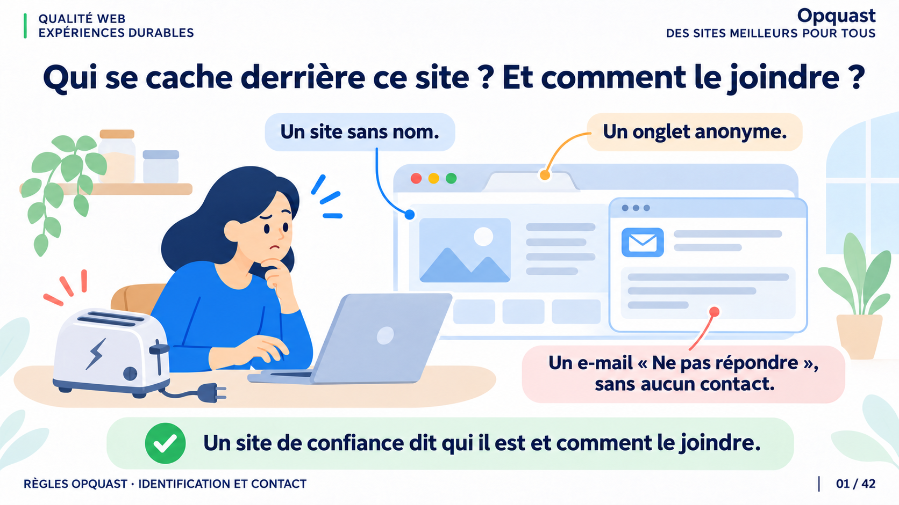
Une femme assise à une table consulte son ordinateur, le menton posé sur une main. Un grille-pain marqué d’un éclair et sa prise débranchée sont devant elle. À droite, une page web et un e-mail sont agrandis. Trois cartouches reliés à la page, à l’onglet et au message nomment les difficultés. Un bandeau vert coché porte la phrase sur l’identité et le contact.
Textes affichés dans l’image
- QUALITÉ WEB
- EXPÉRIENCES DURABLES
- Opquast
- DES SITES MEILLEURS POUR TOUS
- Qui se cache derrière ce site ? Et comment le joindre ?
- Un site sans nom.
- Un onglet anonyme.
- Un e-mail « Ne pas répondre », sans aucun contact.
- Un site de confiance dit qui il est et comment le joindre.
- RÈGLES OPQUAST · IDENTIFICATION ET CONTACT
- 01 / 42
Confier une demande à un inconnu
- Vous cherchez à faire réparer un appareil, mais rien ne dit qui gère le service trouvé en ligne.
- Après votre demande, un e-mail vous demande de ne pas répondre sans proposer d’autre contact.
Ce que coûte le doute
- Vous ne savez pas à qui vous adresser si la réparation se passe mal.
- Une identité claire et un contact accessible contribuent à la confiance, sans suffire à prouver la qualité du service.
Mémo oral
- Qui parle, comment le joindre.
Transition
- Pour répondre, il faut reconnaître les situations et savoir où vérifier.
Slide 2 - Notre contrat : reconnaître, distinguer, vérifier
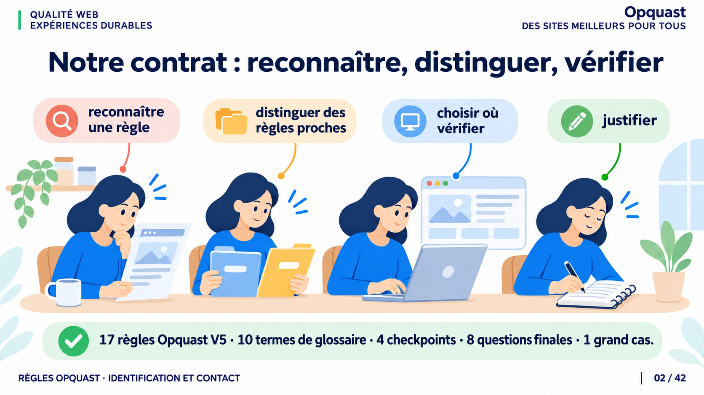
Quatre scènes montrent la même femme à une table : elle examine une page imprimée, compare un dossier bleu et un dossier jaune, consulte son ordinateur puis écrit dans un carnet à spirale. Au-dessus, quatre cartouches associent les capacités annoncées à une loupe, des dossiers, un écran et un crayon. Le bandeau vert inférieur énumère le contenu de la formation.
Textes affichés dans l’image
- QUALITÉ WEB
- EXPÉRIENCES DURABLES
- Opquast
- DES SITES MEILLEURS POUR TOUS
- Notre contrat : reconnaître, distinguer, vérifier
- reconnaître une règle
- distinguer des règles proches
- choisir où vérifier
- justifier
- 17 règles Opquast V5 · 10 termes de glossaire · 4 checkpoints · 8 questions finales · 1 grand cas.
- RÈGLES OPQUAST · IDENTIFICATION ET CONTACT
- 02 / 42
Reconnaître plutôt que réciter
- Face à un défaut, il faut comprendre ce qui gêne l’utilisateur et quelle règle répond à cette gêne.
- Il faut aussi distinguer les règles voisines et choisir la bonne source de vérification.
Un entraînement par cas
- Toute la rubrique sera abordée, puis reliée à des règles connexes.
- Les checkpoints ont leurs corrigés dans le discours oral.
- Les exercices sont des créations pédagogiques, sans statut de questions officielles ni promesse de résultat à l’examen.
Mémo oral
- Reconnaître → distinguer → vérifier → justifier.
Transition
- Le parcours de l’utilisateur donne un ordre à ces vérifications.
Slide 3 - Le plan : cinq actes après l’introduction
Cinq panneaux colorés présentent les actes. La visiteuse regarde une page sur ordinateur, puis consulte son téléphone devant un agrandissement d’onglet. Elle téléphone dans le troisième panneau. Le quatrième montre un sablier et une barre partiellement remplie dans une fenêtre ; dans le dernier, elle écrit près d’une liste cochée. Une ligne à cinq points colorés court sous les panneaux, devant une visiteuse qui marche avec son téléphone et son sac à dos.
Textes affichés dans l’image
- QUALITÉ WEB
- EXPÉRIENCES DURABLES
- Opquast
- DES SITES MEILLEURS POUR TOUS
- Le plan : cinq actes après l’introduction
- 1 Dire qui l’on est
- 2 Se reconnaître dans les onglets
- 3 Pouvoir joindre quelqu’un
- 4 Être rassuré après la demande
- 5 S’entraîner pour la certification
- RÈGLES OPQUAST · IDENTIFICATION ET CONTACT
- 03 / 42
Suivre les moments de l’utilisateur
- À l’arrivée, la personne cherche qui propose le service et à qui il s’adresse.
- Elle doit ensuite reconnaître le site, trouver un contact et comprendre ce qui suit sa demande.
Un ordre pour apprendre
- Ces cinq actes forment une organisation pédagogique, pas une classification officielle des règles.
- L’ordre du parcours aide à séparer identité, reconnaissance et contact.
- L’entraînement final sert à expliquer ces différences à partir de cas.
Mémo oral
- Arriver, reconnaître, contacter, attendre.
Transition
- Un même site fictif permettra de suivre ces moments.
Slide 4 - Le fil rouge : Les Ateliers du Pont, en cinq moments
Une femme utilise son téléphone, assise sur un banc devant l’atelier dont l’enseigne porte le nom Les Ateliers du Pont et la mention d’association fictive de réparation. Des outils sont accrochés derrière la vitrine. Cinq panneaux reliés présentent une page sur téléphone, un doigt sélectionnant un onglet, un formulaire avec son bouton, un téléphone posé sur une table puis un message reçu. Ils portent les verbes Arriver, Reconnaître, Contacter, Attendre et Recevoir.
Textes affichés dans l’image
- QUALITÉ WEB
- EXPÉRIENCES DURABLES
- Opquast
- DES SITES MEILLEURS POUR TOUS
- Le fil rouge : Les Ateliers du Pont, en cinq moments
- Les Ateliers du Pont
- association fictive de réparation
- Arriver
- Reconnaître
- Contacter
- Attendre
- Recevoir
- RÈGLES OPQUAST · IDENTIFICATION ET CONTACT
- 04 / 42
Une association imaginaire
- Les Ateliers du Pont sont une association fictive de réparation d’objets du quotidien.
- Son nom et les situations qui l’entourent servent d’exemple ; aucune coordonnée réelle n’est utilisée.
Cinq moments de confiance ou de doute
- Une personne découvre le service, le retrouve dans ses onglets puis cherche à le joindre.
- Elle attend ensuite une réponse et reçoit un e-mail.
- À chaque moment, plusieurs règles peuvent se compléter pour réduire l’incertitude.
Mémo oral
- Un site, cinq moments, dix-sept règles.
Transition
- Commençons par les mots qui permettent de nommer précisément ce que l’on vérifie.
Slide 5 - Glossaire 1/2 : ce qui identifie un site
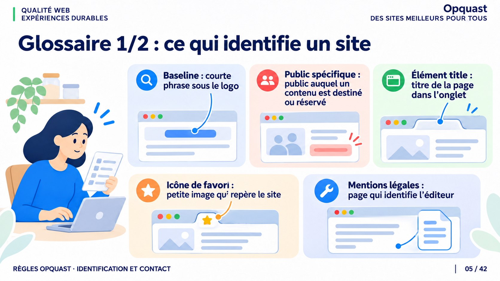
La visiteuse tient une fiche à côté de son ordinateur. Cinq panneaux illustrent les définitions : une ligne sous l’en-tête d’une page pour la baseline, un groupe de personnes pour le public spécifique, un onglet détouré pour l’élément title, une étoile dans un onglet pour l’icône de favori et une feuille devant une page pour les mentions légales. Des traits relient plusieurs définitions à la zone concernée.
Textes affichés dans l’image
- QUALITÉ WEB
- EXPÉRIENCES DURABLES
- Opquast
- DES SITES MEILLEURS POUR TOUS
- Glossaire 1/2 : ce qui identifie un site
- Baseline : courte phrase sous le logo
- Public spécifique : public auquel un contenu est destiné ou réservé
- Élément title : titre de la page dans l’onglet
- Icône de favori : petite image qui repère le site
- Mentions légales : page qui identifie l’éditeur
- RÈGLES OPQUAST · IDENTIFICATION ET CONTACT
- 05 / 42
Identifier le bon objet
- La baseline accompagne le logo et peut aider à comprendre ce que propose le site.
- Le public spécifique désigne les personnes auxquelles des contenus sont destinés ou réservés.
- Le titre de page et l’icône de favori contribuent à reconnaître le site dans le navigateur.
Des mots qui orientent le contrôle
- L’élément title ne se confond pas avec le grand titre affiché dans la page.
- Les mentions légales accueillent souvent l’identité de l’éditeur, mais cette identité peut se trouver ailleurs.
- Les définitions de title et des mentions légales sont ici des formulations pédagogiques ; les trois autres termes viennent du glossaire officiel.
Mémo oral
- Baseline, public, title, icône, mentions.
Transition
- Le contact a lui aussi ses termes à distinguer.
Slide 6 - Glossaire 2/2 : ce qui permet de joindre
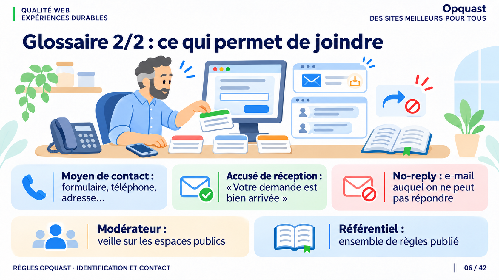
Un homme barbu est assis devant un formulaire sur écran et tient une fiche. Un téléphone fixe, un mobile, trois autres fiches et un livre ouvert occupent son bureau. Des fenêtres montrent un e-mail et des échanges, près d’une flèche accompagnée d’un signe d’interdiction. Cinq encadrés définissent le moyen de contact, l’accusé de réception, le no-reply, le modérateur et le référentiel, avec leurs pictogrammes.
Textes affichés dans l’image
- QUALITÉ WEB
- EXPÉRIENCES DURABLES
- Opquast
- DES SITES MEILLEURS POUR TOUS
- Glossaire 2/2 : ce qui permet de joindre
- Moyen de contact : formulaire, téléphone, adresse…
- Accusé de réception : « Votre demande est bien arrivée »
- No-reply : e-mail auquel on ne peut pas répondre
- Modérateur : veille sur les espaces publics
- Référentiel : ensemble de règles publié
- RÈGLES OPQUAST · IDENTIFICATION ET CONTACT
- 06 / 42
Joindre et recevoir
- Un moyen de contact peut être un formulaire, un téléphone, une adresse postale ou un compte sur un réseau social.
- L’accusé de réception confirme que la demande est arrivée, sans affirmer qu’elle est traitée.
- Un e-mail no-reply ne permet pas de répondre directement à son adresse d’envoi.
Des rôles à ne pas confondre
- Le modérateur est l’interlocuteur des espaces publics comme les forums et commentaires.
- Un référentiel est un ensemble de règles publié, comme Opquast.
- Contact et accusé de réception viennent du glossaire officiel ; les trois autres définitions sont pédagogiques.
Mémo oral
- Arrivé n’est pas traité.
Transition
- Avec ces mots, chaque règle peut être abordée par trois questions simples.
Slide 7 - Une règle se lit avec trois questions
Un homme barbu, une main au menton et l’autre sur la souris, regarde deux écrans. Le premier montre une page avec une image, le second une liste dont une ligne est bleue. À droite, une fenêtre agrandie juxtapose du code et un aperçu de page. Les cartouches Quel préjudice ?, Quelle garantie ? et Où vérifier ? sont reliés à ces trois vues. Une tasse, des livres et des crayons sont posés sur le bureau.
Textes affichés dans l’image
- QUALITÉ WEB
- EXPÉRIENCES DURABLES
- Opquast
- DES SITES MEILLEURS POUR TOUS
- Une règle se lit avec trois questions
- Quel préjudice ?
- Quelle garantie ?
- Où vérifier ?
- RÈGLES OPQUAST · IDENTIFICATION ET CONTACT
- 07 / 42
Partir de la gêne
- Une règle sans lien avec un préjudice concret s’oublie ou s’applique mal.
- L’onglet anonyme fait perdre un repère ; la question est alors de savoir ce qui permettrait de le reconnaître.
Chercher une preuve adaptée
- La garantie reste limitée à ce que couvre la règle, sans devenir une promesse générale de qualité.
- Selon l’objet, il faut examiner l’accueil, une page de contact, le code source ou la boîte de réception.
- Le délai de réponse illustre cette limite : son indication se contrôle, pas le respect effectif du délai.
Mémo oral
- Préjudice, garantie, lieu de contrôle.
Transition
- À l’arrivée, la première question est de comprendre ce que propose le site.
Slide 8 - En arrivant, je comprends ce que propose le site
La visiteuse regarde son ordinateur, une main au menton, près d’un sèche-cheveux débranché. Deux pages agrandies sont reliées par une flèche verte. Avant, l’en-tête dit « Bienvenue ! ». Après, il présente la réparation, les ateliers, les conseils et le prêt d’outils, au-dessus de trois pictogrammes : un groupe, une ampoule et une clé. Une fiche illustrée et une boîte à outils sont posées devant la seconde page.
Textes affichés dans l’image
- QUALITÉ WEB
- EXPÉRIENCES DURABLES
- Opquast
- DES SITES MEILLEURS POUR TOUS
- En arrivant, je comprends ce que propose le site
- Acte 1 · Dire qui l’on est
- R. 99
- Avant :
- « Bienvenue ! »
- Après :
- « Réparer plutôt que jeter : ateliers, conseils et prêt d’outils. »
- RÈGLES OPQUAST · IDENTIFICATION ET CONTACT
- 08 / 42
Règles Opquast de la slide
Comprendre avant d’explorer
- Un message de bienvenue ne permet pas de savoir si le service répond au besoin.
- La personne qui arrive doit pouvoir comprendre ce que le site propose.
Impact du non-respect
- Un accueil vague oblige à chercher dans plusieurs pages et fait perdre du temps.
Ce que garantit la règle
- La règle vise à donner une vision immédiate des contenus et services, sans imposer une présentation unique.
- Sur l’accueil, on vérifie la présence d’une information qui résume l’offre.
- La baseline peut y contribuer ; le livre précise que c’est souvent l’ensemble de l’accueil qui donne cet aperçu.
Mémo oral
- L’accueil dit ce que l’on fait.
Transition
- Il faut aussi savoir si ces contenus sont adaptés à la personne qui arrive.
Slide 9 - Réservé à un public ? Dites-le dès l’accueil
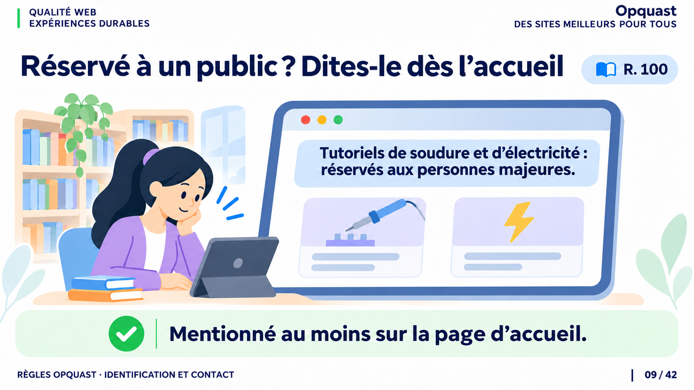
Une femme en veste violette consulte une tablette à une table de bibliothèque. À droite, une grande page affiche en tête la restriction des tutoriels de soudure et d’électricité aux personnes majeures. Deux vignettes montrent un fer à souder et un éclair. Le bandeau inférieur coché rappelle l’emplacement de la mention sur l’accueil.
Textes affichés dans l’image
- QUALITÉ WEB
- EXPÉRIENCES DURABLES
- Opquast
- DES SITES MEILLEURS POUR TOUS
- Réservé à un public ? Dites-le dès l’accueil
- R. 100
- Tutoriels de soudure et d’électricité : réservés aux personnes majeures.
- Mentionné au moins sur la page d’accueil.
- RÈGLES OPQUAST · IDENTIFICATION ET CONTACT
- 09 / 42
Règles Opquast de la slide
Savoir si l’on est concerné
- Certains contenus peuvent présenter un risque ou ne pas convenir à tous les publics.
- Dans l’exemple fictif, les tutoriels techniques sont réservés aux personnes majeures.
Impact du non-respect
- Sans avertissement, une personne peut consulter un contenu inadapté ou découvrir trop tard qu’il ne lui est pas destiné.
Ce que garantit la règle
- La mention vise à avertir le public et à éviter des consultations inutiles.
- Le contrôle recherche un avertissement explicite sur la nature du contenu et son public au moins sur l’accueil.
- La règle est conditionnelle : elle n’impose pas une mention de public sur tous les sites, ni une obligation juridique nationale.
Mémo oral
- Public réservé, avertissement d’entrée.
Transition
- Comprendre l’offre et son public ne dit pas encore qui propose le service.
Slide 10 - Qui propose ce service ?
Une femme aux cheveux blancs tient un crayon devant une page web agrandie, avec une feuille et une tablette posées sur la table. Le lien Mentions légales, encadré en bleu au bas de la page, est relié par une flèche verte à un agrandissement circulaire. Celui-ci nomme l’association Les Ateliers du Pont comme proposant le site. Le bandeau inférieur cite le logo, le pied de page et les mentions légales.
Textes affichés dans l’image
- QUALITÉ WEB
- EXPÉRIENCES DURABLES
- Opquast
- DES SITES MEILLEURS POUR TOUS
- Qui propose ce service ?
- R. 101
- Mentions légales
- Site proposé par l’association Les Ateliers du Pont.
- Logo, pied de page ou mentions légales.
- RÈGLES OPQUAST · IDENTIFICATION ET CONTACT
- 10 / 42
Règles Opquast de la slide
Nommer l’entité qui propose le service
- Avant de confier une demande, on veut savoir à qui l’on parle.
- Le nom peut se trouver dans le logo, dans le pied de page ou dans les mentions légales.
Impact du non-respect
- L’anonymat alimente la défiance et peut conduire à renoncer au service.
Ce que garantit la règle
- L’identification vise à rendre l’auteur ou l’organisation reconnaissable sans ambiguïté.
- On vérifie la mention du nom sur l’accueil, une page accessible depuis l’accueil ou les pages du site.
- Si le site et l’organisation portent le même nom, sa mention dans le logo ou la baseline peut suffire.
Mémo oral
- On sait qui propose le service.
Transition
- L’entité identifiée, reste à savoir qui répond des contenus.
Slide 11 - Qui répond des contenus ?
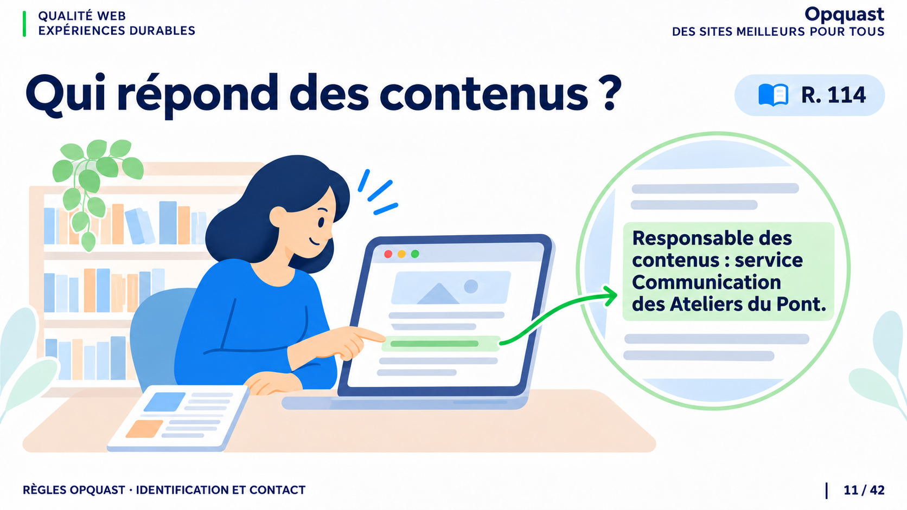
La visiteuse pointe une ligne verte sur l’écran de son ordinateur. Une flèche relie cette ligne à un agrandissement circulaire où figure le service Communication des Ateliers du Pont, responsable des contenus. Une fiche illustrée repose sur la table et une bibliothèque occupe l’arrière-plan.
Textes affichés dans l’image
- QUALITÉ WEB
- EXPÉRIENCES DURABLES
- Opquast
- DES SITES MEILLEURS POUR TOUS
- Qui répond des contenus ?
- R. 114
- Responsable des contenus : service Communication des Ateliers du Pont.
- RÈGLES OPQUAST · IDENTIFICATION ET CONTACT
- 11 / 42
Règles Opquast de la slide
Pouvoir parler des contenus
- Savoir qui propose le site ne dit pas toujours qui peut répondre d’une information fausse ou contestée.
- Le responsable des contenus donne un interlocuteur à cette discussion.
Impact du non-respect
- Sans responsable identifié, l’utilisateur ne sait pas qui peut répondre de ce qui est publié.
Ce que garantit la règle
- La règle vise à identifier la personne ou le service responsable des contenus.
- Le livre recommande de nommer une personne physique, mais le contrôle accepte aussi un service identifié.
- La présence de cette mention se vérifie sur l’accueil, sur une page accessible depuis celui-ci ou dans les pages du site.
Mémo oral
- Quelqu’un répond des contenus.
Transition
- Une autre information permet de vérifier l’existence officielle de la structure.
Slide 12 - Un numéro pour vérifier l’existence légale
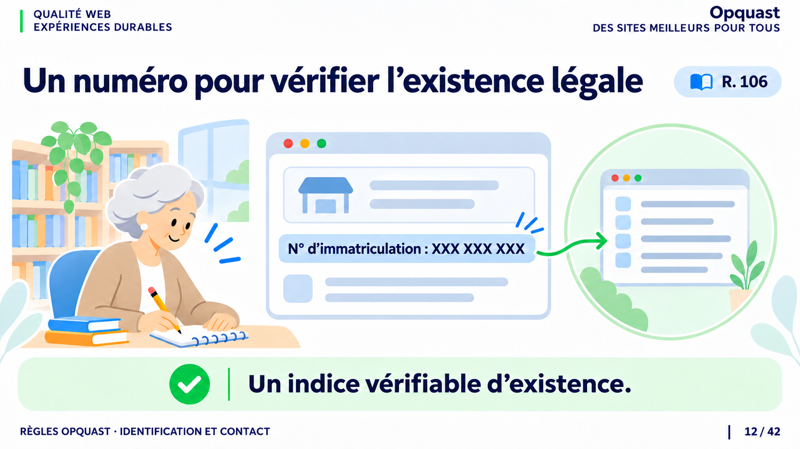
Une femme aux cheveux blancs écrit dans un carnet à spirale. À côté d’elle, une page web agrandie présente une devanture et la ligne N° d’immatriculation : XXX XXX XXX, sur fond bleu. Une flèche verte part de cette ligne vers une fenêtre contenant une liste, dans un cercle à droite. Le bandeau inférieur coché porte la phrase sur l’indice vérifiable d’existence.
Textes affichés dans l’image
- QUALITÉ WEB
- EXPÉRIENCES DURABLES
- Opquast
- DES SITES MEILLEURS POUR TOUS
- Un numéro pour vérifier l’existence légale
- R. 106
- N° d’immatriculation : XXX XXX XXX
- Un indice vérifiable d’existence.
- RÈGLES OPQUAST · IDENTIFICATION ET CONTACT
- 12 / 42
Règles Opquast de la slide
Un indice que l’on peut vérifier
- Il est possible d’inventer une société ou d’usurper une identité en ligne.
- Un numéro délivré lors de l’enregistrement de la structure donne un indice sur sa réalité administrative.
Impact du non-respect
- Sans cet indice, l’utilisateur manque d’un moyen de vérifier l’existence officielle de l’organisation.
Ce que garantit la règle
- Elle vise à fournir une indication vérifiable, sans certifier à elle seule la fiabilité du service.
- Le contrôle cherche la présence du numéro sur l’accueil, les mentions légales, la page À propos, Contact ou les conditions générales.
- Un particulier sans entité juridique n’est pas concerné ; le gabarit montré est fictif.
Mémo oral
- Un numéro que l’on peut vérifier.
Transition
- Ces informations peuvent partager une page sans répondre à la même question.
Slide 13 - Organisation, existence, responsable : trois questions différentes
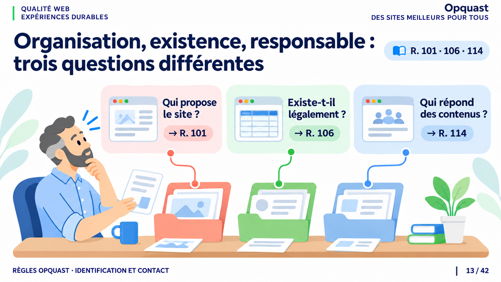
Un homme barbu tient une fiche, une main au menton, devant trois dossiers ouverts : rouge, vert et bleu. Chaque dossier est relié à un panneau de même couleur. Les panneaux associent une page web à la question sur l’organisation, un tableau à l’existence légale et un groupe de personnes à la responsabilité des contenus, avec les règles 101, 106 et 114. Des feuilles sont étalées devant les dossiers.
Textes affichés dans l’image
- QUALITÉ WEB
- EXPÉRIENCES DURABLES
- Opquast
- DES SITES MEILLEURS POUR TOUS
- Organisation, existence, responsable : trois questions différentes
- R. 101 · 106 · 114
- Qui propose le site ?
- → R. 101
- Existe-t-il légalement ?
- → R. 106
- Qui répond des contenus ?
- → R. 114
- RÈGLES OPQUAST · IDENTIFICATION ET CONTACT
- 13 / 42
Règles Opquast de la slide
Trois questions sur une même page
- L’identité nomme l’entité qui propose le service.
- L’immatriculation donne une indication vérifiable de son existence officielle.
- Le responsable des contenus est la personne ou le service qui répond de ce qui est publié.
Trois manques différents
- Citer le nom de l’organisation ne fournit ni son immatriculation ni l’identité du responsable des contenus.
- Une même page peut couvrir les trois besoins, mais chaque information se contrôle séparément.
- Ce rapprochement est pédagogique, sans constituer une catégorie officielle ; l’immatriculation ne vise pas un particulier sans structure juridique.
Mémo oral
- Qui, existence, responsable.
Transition
- Les déclarations de respect d’un référentiel demandent elles aussi un repère vérifiable.
Slide 14 - Déclarer un référentiel, c’est donner le lien
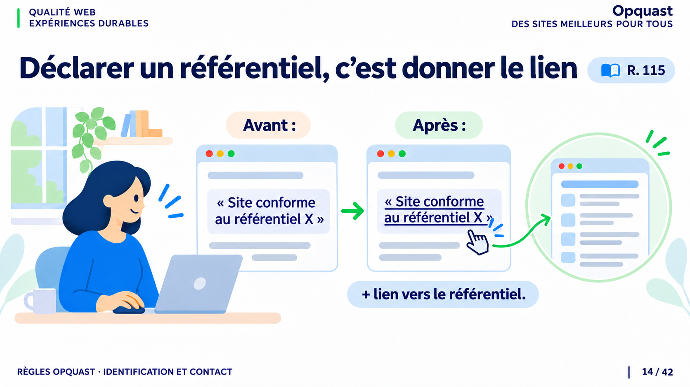
La visiteuse utilise la souris devant son ordinateur. Deux fenêtres Avant et Après portent la même déclaration de conformité au référentiel X. Dans la seconde, la phrase est soulignée et un pointeur en forme de main la désigne. Une flèche verte mène à une page de liste dans un cercle à droite. Sous la seconde fenêtre, un cartouche indique l’ajout du lien vers le référentiel.
Textes affichés dans l’image
- QUALITÉ WEB
- EXPÉRIENCES DURABLES
- Opquast
- DES SITES MEILLEURS POUR TOUS
- Déclarer un référentiel, c’est donner le lien
- R. 115
- Avant :
- « Site conforme au référentiel X »
- Après :
- « Site conforme au référentiel X »
- + lien vers le référentiel.
- RÈGLES OPQUAST · IDENTIFICATION ET CONTACT
- 14 / 42
Règles Opquast de la slide
Comprendre une déclaration
- Une mention de conformité est censée rassurer, mais elle doit permettre de savoir à quelles exigences elle renvoie.
- Le référentiel joue un rôle de tiers de confiance en donnant accès aux règles annoncées.
Impact du non-respect
- Une déclaration sans lien empêche de comprendre ce qu’elle recouvre et peut éveiller la méfiance.
Ce que garantit la règle
- Le lien permet de consulter chaque standard ou référentiel déclaré.
- On recherche les déclarations dans le site et on vérifie que chacune propose son lien.
- La règle n’impose pas de déclarer un référentiel et le lien ne prouve pas le respect effectif de ses exigences.
Mémo oral
- Déclaré, donc lié.
Transition
- Quatre situations permettent maintenant de distinguer les informations manquantes.
Slide 15 - Checkpoint 1 : quatre accueils, quatre règles
La visiteuse tient un stylo près de son menton, devant un carnet ouvert. Quatre panneaux A à D présentent les cas à examiner. Ils montrent respectivement une page sur téléphone, une boutique de vin sur écran, une page de déclaration de référentiel et une page avec un document. La question commune est inscrite dans un bandeau bleu au-dessus des quatre énoncés.
Textes affichés dans l’image
- QUALITÉ WEB
- EXPÉRIENCES DURABLES
- Opquast
- DES SITES MEILLEURS POUR TOUS
- Checkpoint 1 : quatre accueils, quatre règles
- Quelle règle n’est pas respectée ?
- A. Sous le logo, seulement « Bienvenue ! ».
- B. Boutique de vin : rien n’indique qu’elle est réservée aux majeurs.
- C. « Site conforme au référentiel X », sans lien.
- D. Mentions légales d’une société, sans numéro d’immatriculation.
- RÈGLES OPQUAST · IDENTIFICATION ET CONTACT
- 15 / 42
Règles Opquast de la slide
Identifier le manque
- Chaque cas porte sur ce qui manque à l’utilisateur, avant de chercher un correctif.
- Ces situations sont des exercices originaux, pas des questions officielles.
Les quatre réponses
- En A, l’objet visé est la nature des contenus et services exposée à l’accueil : le seul message de bienvenue ne la décrit pas.
- En B, il manque l’avertissement sur le public spécifique, et non le nom de l’organisation.
- En C, la déclaration doit donner un lien vers le référentiel.
- En D, il manque le numéro d’immatriculation de la société.
Mémo oral
- Un manque, une règle.
Transition
- Quittons l’accueil pour les repères qui restent dans le navigateur.
Slide 16 - Dans l’onglet, je reconnais le site
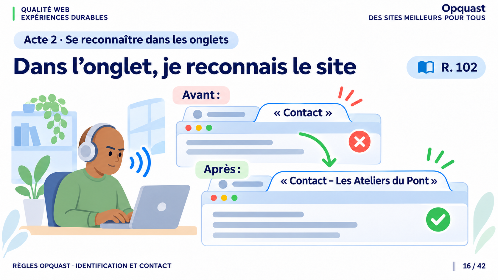
Un homme portant un casque utilise son ordinateur, avec des ondes bleues dessinées près de son oreille. À droite, deux fenêtres agrandies sont reliées par une flèche verte. L’onglet Avant dit « Contact » et la fenêtre porte une croix rouge. L’onglet Après associe Contact au nom Les Ateliers du Pont et la fenêtre porte une coche verte.
Textes affichés dans l’image
- QUALITÉ WEB
- EXPÉRIENCES DURABLES
- Opquast
- DES SITES MEILLEURS POUR TOUS
- Dans l’onglet, je reconnais le site
- Acte 2 · Se reconnaître dans les onglets
- R. 102
- Avant :
- « Contact »
- Après :
- « Contact – Les Ateliers du Pont »
- RÈGLES OPQUAST · IDENTIFICATION ET CONTACT
- 16 / 42
Règles Opquast de la slide
Un titre qui accompagne la page
- Le titre se retrouve dans les onglets, les favoris et la fenêtre du navigateur.
- Il aide aussi les personnes qui utilisent un lecteur d’écran à se situer.
Impact du non-respect
- Un intitulé comme Contact seul ne permet pas de retrouver le site parmi plusieurs onglets ou favoris.
Ce que garantit la règle
- La présence du nom vise à identifier immédiatement le site.
- On vérifie ce nom dans l’élément title de chaque page, sans le confondre avec le titre visible du contenu.
- Un contrôle par gabarit ou échantillon doit surveiller les pages fournies par un service tiers.
Mémo oral
- Le titre nomme le site.
Transition
- Reconnaître le site ne suffit pas à distinguer ses différentes pages.
Slide 17 - Dans l’onglet, je reconnais la page
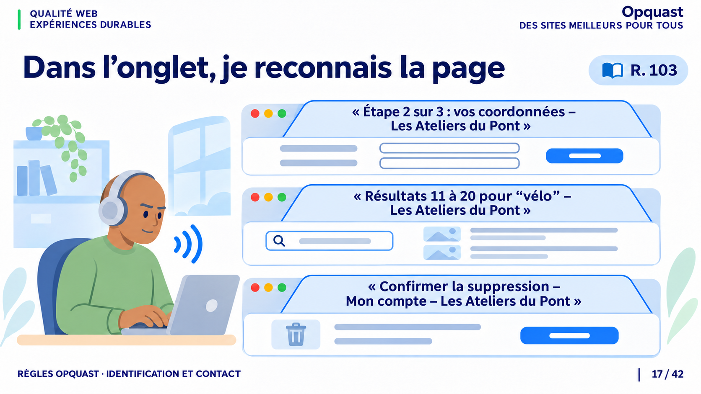
L’utilisateur au casque consulte son ordinateur. Trois fenêtres sont empilées à droite. Leurs onglets nomment une étape de coordonnées, des résultats de recherche pour vélo et une confirmation de suppression, chacun suivi du nom du site. Les pages correspondantes montrent deux champs de formulaire, une recherche avec deux résultats puis une corbeille et un bouton.
Textes affichés dans l’image
- QUALITÉ WEB
- EXPÉRIENCES DURABLES
- Opquast
- DES SITES MEILLEURS POUR TOUS
- Dans l’onglet, je reconnais la page
- R. 103
- « Étape 2 sur 3 : vos coordonnées – Les Ateliers du Pont »
- « Résultats 11 à 20 pour “vélo” – Les Ateliers du Pont »
- « Confirmer la suppression – Mon compte – Les Ateliers du Pont »
- RÈGLES OPQUAST · IDENTIFICATION ET CONTACT
- 17 / 42
Règles Opquast de la slide
Reconnaître la page précise
- Deux pages du même site doivent pouvoir être distinguées dans le navigateur.
- Le titre peut préciser une étape, une série de résultats ou une action à confirmer.
Impact du non-respect
- Des titres identiques font perdre le repère de la page et ne confirment pas l’étape atteinte, notamment avec un lecteur d’écran.
Ce que garantit la règle
- Un title descriptif permet de comprendre le contenu ou la fonction de la page.
- La vérification couvre les étapes de processus, les résultats de recherche et les changements majeurs du contenu via Ajax.
- L’arborescence complète relève plutôt du fil d’Ariane selon l’avis de l’expert.
Mémo oral
- Le titre dit ce que contient la page.
Transition
- À ce repère textuel s’ajoute une petite image familière dans le navigateur.
Slide 18 - Une icône pour repérer le site d’un coup d’œil
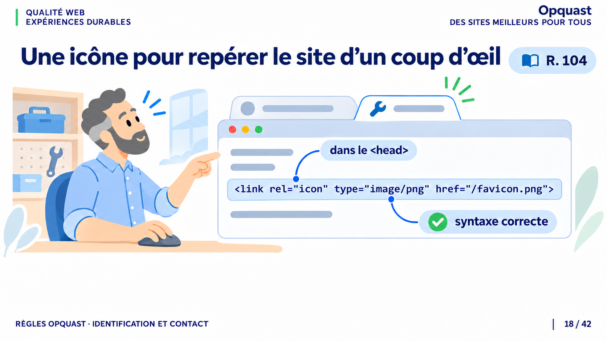
Un homme barbu pointe une grande fenêtre de navigateur, une main sur la souris. Une clé bleue apparaît dans l’onglet actif. Dans la fenêtre, la ligne de code link rel="icon" avec le type image/png et le chemin /favicon.png est encadrée. Deux traits la relient aux cartouches « dans le <head> » et « syntaxe correcte », ce dernier accompagné d’une coche verte. Des outils et des boîtes occupent une étagère derrière l’homme.
Textes affichés dans l’image
- QUALITÉ WEB
- EXPÉRIENCES DURABLES
- Opquast
- DES SITES MEILLEURS POUR TOUS
- Une icône pour repérer le site d’un coup d’œil
- R. 104
- dans le <head>
- syntaxe correcte
- <link rel="icon" type="image/png" href="/favicon.png">
- RÈGLES OPQUAST · IDENTIFICATION ET CONTACT
- 18 / 42
Règles Opquast de la slide
Un repère visuel durable
- L’icône de favori aide à retrouver le site parmi les onglets et les favoris.
- Elle complète le titre sans le remplacer.
Impact du non-respect
- Une icône générique ressemble à celles des autres sites et rend le repérage plus difficile.
Ce que garantit la règle
- L’appel explicite vise à permettre l’identification visuelle du site dans les navigateurs.
- Avec un inspecteur de code, on vérifie la présence de l’élément link dans le head et la syntaxe de l’appel.
- Un fichier trouvé par défaut et une icône affichée ne prouvent pas cet appel.
- Vérifier que le fichier existe est une précaution utile, distincte du contrôle décrit par le livre.
Mémo oral
- Une icône appelée dans le code.
Transition
- L’onglet rassemble ainsi trois repères complémentaires.
Slide 19 - Titre du contenu, nom du site, icône : le trio de l’onglet
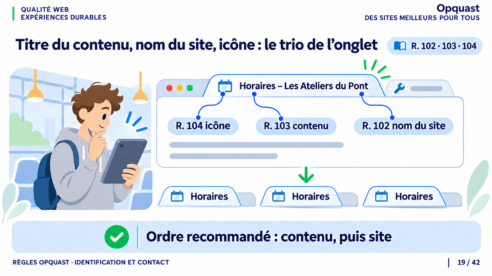
Un jeune homme en sweat gris et sac à dos regarde sa tablette. À droite, l’onglet associant Horaires au nom Les Ateliers du Pont est agrandi. Trois traits bleus relient son calendrier, le mot Horaires et le nom du site aux cartouches des règles 104, 103 et 102. Un onglet voisin porte une clé. En dessous, trois petits onglets affichent chacun un calendrier et Horaires. Le bandeau inférieur donne l’ordre recommandé.
Textes affichés dans l’image
- QUALITÉ WEB
- EXPÉRIENCES DURABLES
- Opquast
- DES SITES MEILLEURS POUR TOUS
- Titre du contenu, nom du site, icône : le trio de l’onglet
- R. 102 · 103 · 104
- Horaires – Les Ateliers du Pont
- R. 104 icône
- R. 103 contenu
- R. 102 nom du site
- Horaires
- Horaires
- Horaires
- Ordre recommandé : contenu, puis site
- RÈGLES OPQUAST · IDENTIFICATION ET CONTACT
- 19 / 42
Règles Opquast de la slide
Trois repères dans un petit espace
- L’icône aide à reconnaître visuellement le site.
- Le titre distingue à la fois le contenu de la page et le site qui le propose.
- Ce trio est un rapprochement pédagogique, pas une classification officielle.
Une recommandation d’ordre
- L’expert recommande le contenu avant le nom du site pour garder le début propre à chaque page visible dans un onglet étroit.
- L’ordre inverse peut respecter les deux règles sur le titre dès lors que site et contenu restent identifiables.
- Ce conseil de présentation ne remplace pas un titre propre à chaque contenu.
Mémo oral
- Icône, contenu, site.
Transition
- Pour distinguer ces besoins, cherchons ce qui manque dans trois rangées d’onglets.
Slide 20 - Checkpoint 2 : trois rangées d’onglets
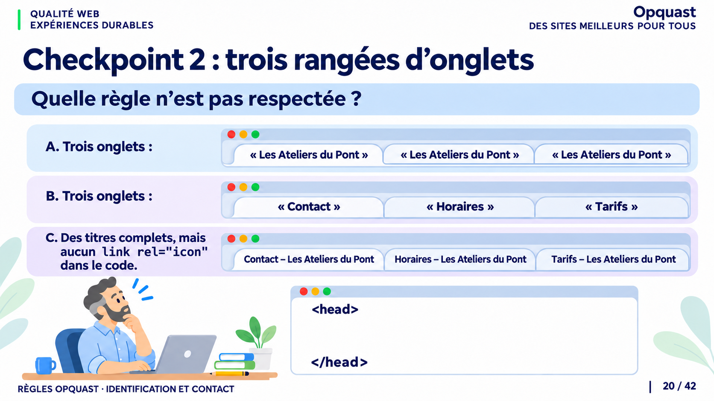
Trois rangées A, B et C présentent chacune trois onglets. La première répète Les Ateliers du Pont ; la deuxième affiche Contact, Horaires et Tarifs ; la troisième associe chaque intitulé au nom du site. Sous les rangées, une fenêtre de code affiche les balises <head> et </head>. En bas à gauche, un homme barbu réfléchit devant son ordinateur, une main au menton. La question commune apparaît au-dessus des rangées.
Textes affichés dans l’image
- QUALITÉ WEB
- EXPÉRIENCES DURABLES
- Opquast
- DES SITES MEILLEURS POUR TOUS
- Checkpoint 2 : trois rangées d’onglets
- Quelle règle n’est pas respectée ?
- A. Trois onglets :
- « Les Ateliers du Pont »
- « Les Ateliers du Pont »
- « Les Ateliers du Pont »
- B. Trois onglets :
- « Contact »
- « Horaires »
- « Tarifs »
- C. Des titres complets, mais aucun link rel="icon" dans le code.
- Contact – Les Ateliers du Pont
- Horaires – Les Ateliers du Pont
- Tarifs – Les Ateliers du Pont
- <head>
- </head>
- RÈGLES OPQUAST · IDENTIFICATION ET CONTACT
- 20 / 42
Règles Opquast de la slide
Ce qui manque pour retrouver la page
- Des onglets ouverts auparavant doivent rester compréhensibles sans reparcourir le site.
- Confondre nom du site et contenu conduit à modifier la mauvaise partie du titre.
Les trois réponses
- En A, le site est nommé, mais le contenu de chaque page manque dans le titre.
- En B, les contenus sont nommés, mais le site n’est pas identifié dans le titre.
- En C, les titres sont complets, mais l’appel de l’icône dans le code source manque.
- L’icône générique ne remplace pas un élément link valide dans le head.
Mémo oral
- Site, contenu, icône : trois manques différents.
Transition
- Une fois la bonne page reconnue, il faut pouvoir joindre l’organisation.
Slide 21 - Adresse et téléphone à portée de chaque page
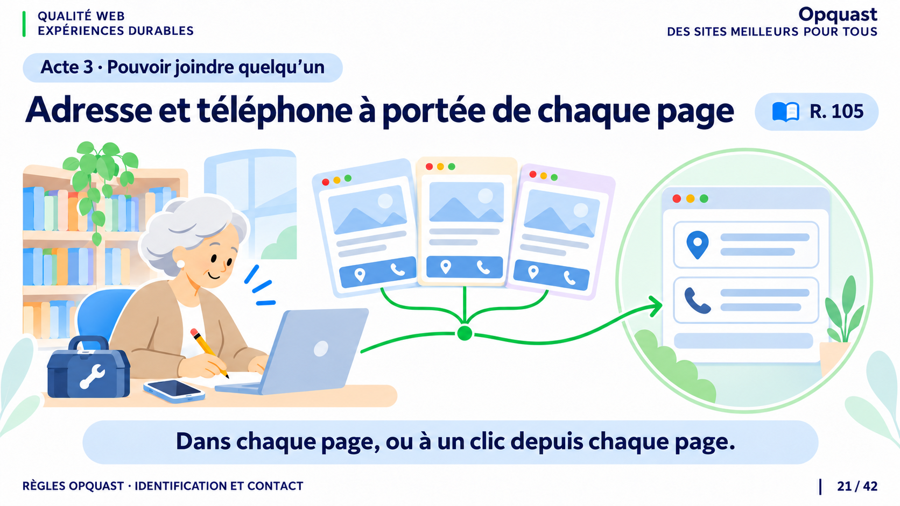
Une femme aux cheveux blancs prend des notes devant son ordinateur, près d’un téléphone et d’une boîte à outils. Trois pages web agrandies portent chacune en pied un repère de localisation et un combiné. Leurs traits verts convergent vers une page de coordonnées dans un cercle, où ces deux pictogrammes accompagnent des lignes. Un bandeau inférieur rappelle l’accès depuis chaque page.
Textes affichés dans l’image
- QUALITÉ WEB
- EXPÉRIENCES DURABLES
- Opquast
- DES SITES MEILLEURS POUR TOUS
- Adresse et téléphone à portée de chaque page
- Acte 3 · Pouvoir joindre quelqu’un
- R. 105
- Dans chaque page, ou à un clic depuis chaque page.
- RÈGLES OPQUAST · IDENTIFICATION ET CONTACT
- 21 / 42
Règles Opquast de la slide
Trouver sans chercher longtemps
- Une visite peut avoir pour seul but de trouver une adresse ou un numéro de téléphone.
- L’utilisateur doit pouvoir les atteindre depuis l’endroit où il se trouve.
Impact du non-respect
- Des coordonnées enfouies font perdre du temps et peuvent conduire à renoncer au contact.
Ce que garantit la règle
- Elle vise l’accès à l’adresse postale complète et au numéro de téléphone, tous deux nécessaires.
- Ils peuvent figurer dans chaque page ou sur une page directement accessible depuis toutes les pages.
- Le contrôle vérifie ces deux informations et leur accès ; un pied de page commun prévu dès les maquettes facilite leur présence partout.
Mémo oral
- Adresse et téléphone, partout à un clic.
Transition
- L’accès aux coordonnées ne couvre pas à lui seul la diversité des moyens de contact.
Slide 22 - Deux moyens de contact, pas un seul
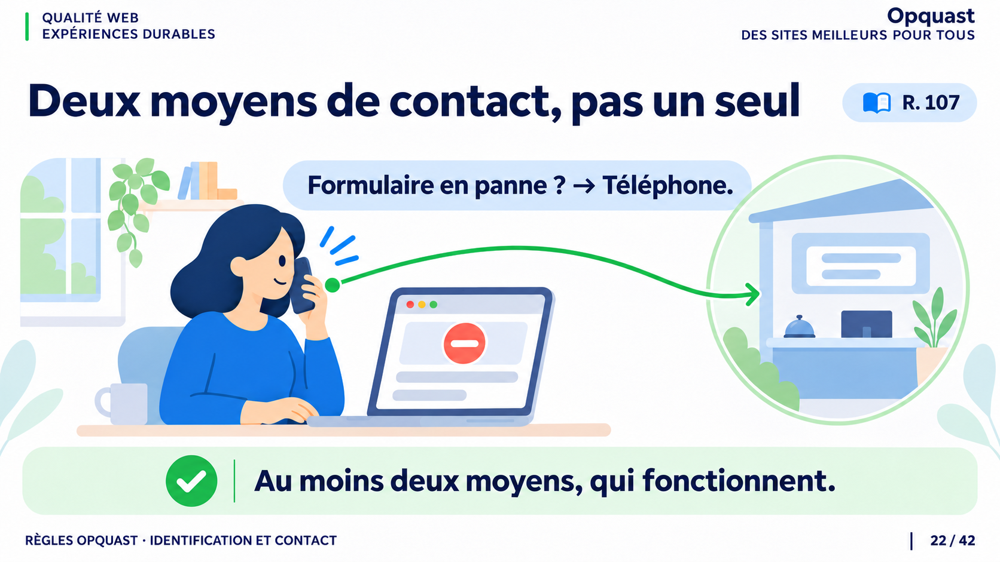
La visiteuse tient un téléphone à l’oreille devant son ordinateur. Sur l’écran, un disque rouge avec une barre blanche signale l’arrêt du formulaire. Une flèche verte mène de la visiteuse à un comptoir d’accueil dans un cercle à droite. La phrase « Formulaire en panne ? → Téléphone. » surmonte la scène ; le bandeau vert coché rappelle les deux moyens fonctionnels.
Textes affichés dans l’image
- QUALITÉ WEB
- EXPÉRIENCES DURABLES
- Opquast
- DES SITES MEILLEURS POUR TOUS
- Deux moyens de contact, pas un seul
- R. 107
- Formulaire en panne ? → Téléphone.
- Au moins deux moyens, qui fonctionnent.
- RÈGLES OPQUAST · IDENTIFICATION ET CONTACT
- 22 / 42
Règles Opquast de la slide
Prévoir une autre voie
- Un formulaire peut tomber en panne et une ligne téléphonique peut être saturée.
- Un canal peut aussi être inutilisable pour une personne, comme le téléphone pour une personne sourde.
Impact du non-respect
- Avec un seul moyen, l’indisponibilité ou la difficulté d’usage peut bloquer tout contact.
Ce que garantit la règle
- Proposer au moins deux moyens de contact différents et fonctionnels multiplie les chances de joindre l’organisation.
- Le contrôle vérifie leur présence et la possibilité de joindre effectivement le responsable par les moyens proposés.
- Le formulaire et le téléphone ne sont que deux exemples ; le glossaire cite aussi l’adresse postale et le compte sur un réseau social.
Mémo oral
- Un canal tombe, l’autre reste.
Transition
- Il faut également savoir quand ces services fonctionnent et à quel prix.
Slide 23 - Quand le service répond-il, et à quel prix ?
Une femme aux cheveux blancs pointe un grand écran avec son crayon. À côté de livres et d’un téléphone fixe, l’écran affiche Assistance téléphonique puis deux lignes : les horaires du lundi au vendredi, de 9 h à 17 h, accompagnés d’une horloge, et Appel non surtaxé, accompagné de pièces empilées.
Textes affichés dans l’image
- QUALITÉ WEB
- EXPÉRIENCES DURABLES
- Opquast
- DES SITES MEILLEURS POUR TOUS
- Quand le service répond-il, et à quel prix ?
- R. 109
- Assistance téléphonique
- Du lundi au vendredi, 9 h – 17 h
- Appel non surtaxé
- RÈGLES OPQUAST · IDENTIFICATION ET CONTACT
- 23 / 42
Règles Opquast de la slide
Le site et l’assistance ont des horaires différents
- Le site peut rester accessible alors que personne ne répond à l’assistance.
- Les horaires montrés sont illustratifs, propres au cas fictif.
Impact du non-respect
- L’utilisateur risque d’appeler en dehors de l’ouverture ou de payer un appel surtaxé sans le savoir.
Ce que garantit la règle
- Elle vise à faire connaître les horaires et les tarifs de fonctionnement des services.
- Le contrôle recherche ces informations sur l’accueil, les mentions légales, l’aide ou les conditions générales.
- Indiquer le seul numéro de téléphone ne précise ni la disponibilité du service ni le coût de l’appel.
Mémo oral
- Quand et combien.
Transition
- Quand le service rendu pose problème, le contact doit aussi orienter la réclamation.
Slide 24 - Un problème après l’achat : qui contacter ?
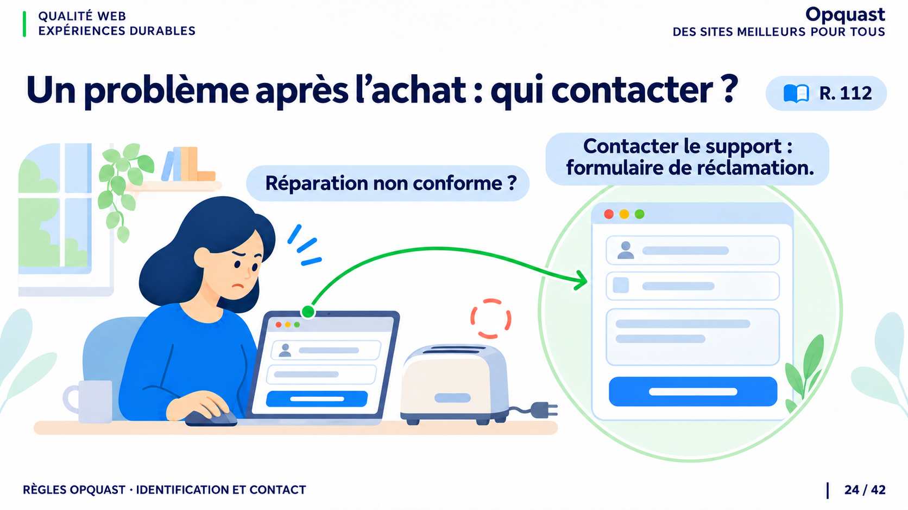
La visiteuse, sourcils froncés, utilise la souris devant un formulaire. Un grille-pain débranché est posé à côté de l’ordinateur, avec un cercle rouge discontinu au-dessus. Une flèche verte mène de l’écran à un formulaire agrandi dans un cercle à droite. Les cartouches nomment la réparation non conforme et le formulaire de réclamation du support.
Textes affichés dans l’image
- QUALITÉ WEB
- EXPÉRIENCES DURABLES
- Opquast
- DES SITES MEILLEURS POUR TOUS
- Un problème après l’achat : qui contacter ?
- R. 112
- Réparation non conforme ?
- Contacter le support : formulaire de réclamation.
- RÈGLES OPQUAST · IDENTIFICATION ET CONTACT
- 24 / 42
Règles Opquast de la slide
Prévoir la réclamation
- Un litige ou une réparation contestée restent possibles.
- L’utilisateur doit savoir à qui adresser son problème, sans devoir deviner le bon interlocuteur.
Impact du non-respect
- Sans contact identifié, la réclamation peut rester sans destinataire et la confiance se dégrade.
Ce que garantit la règle
- Le libellé parle du service après-vente ou du support ; les solutions et le contrôle du livre visent le responsable des réclamations.
- Cet écart de formulation se résout ici par un support explicitement destiné aux réclamations.
- Le contrôle porte sur la présence et la mention du moyen de contact sur l’accueil, les mentions légales, À propos, l’aide ou les conditions générales ; sa nature n’est pas évaluée.
- Décrire le fonctionnement du service après-vente ou la procédure de réclamation relève de règles du commerce en ligne distinctes.
Mémo oral
- Un litige, un interlocuteur.
Transition
- Les espaces publics ont un autre interlocuteur : la modération.
Slide 25 - Joindre le modérateur d’un forum
Une femme en veste violette consulte un ordinateur. La page agrandie du Forum des Ateliers du Pont montre trois contributions avec leurs avatars, puis le lien souligné Contacter la modération. Un pointeur désigne ce lien et une flèche bleue conduit à une fenêtre de message accompagnée d’une enveloppe ouverte, dans un cercle à droite.
Textes affichés dans l’image
- QUALITÉ WEB
- EXPÉRIENCES DURABLES
- Opquast
- DES SITES MEILLEURS POUR TOUS
- Joindre le modérateur d’un forum
- R. 113
- Forum des Ateliers du Pont
- Contacter la modération
- RÈGLES OPQUAST · IDENTIFICATION ET CONTACT
- 25 / 42
Règles Opquast de la slide
Un interlocuteur pour les espaces publics
- Un message envoyé trop vite ou un propos injurieux peut nécessiter un échange avec la modération.
- Ce contact peut servir à demander une correction ou à poser une question, au-delà du seul signalement.
Impact du non-respect
- Sans moyen de joindre la modération, l’auteur ou la personne visée reste sans interlocuteur.
Ce que garantit la règle
- Elle vise à rendre le modérateur effectivement joignable.
- Dans chaque espace public, ou à défaut sur une page générique attendue, on identifie le moyen proposé et on vérifie qu’il permet réellement ce contact.
- Le simple signalement d’abus relève d’une autre règle ; sa présence ne prouve pas que la modération est joignable.
Mémo oral
- Un espace public, un modérateur joignable.
Transition
- Le besoin de la personne permet de choisir parmi ces différents contacts.
Slide 26 - Le bon interlocuteur pour la bonne demande
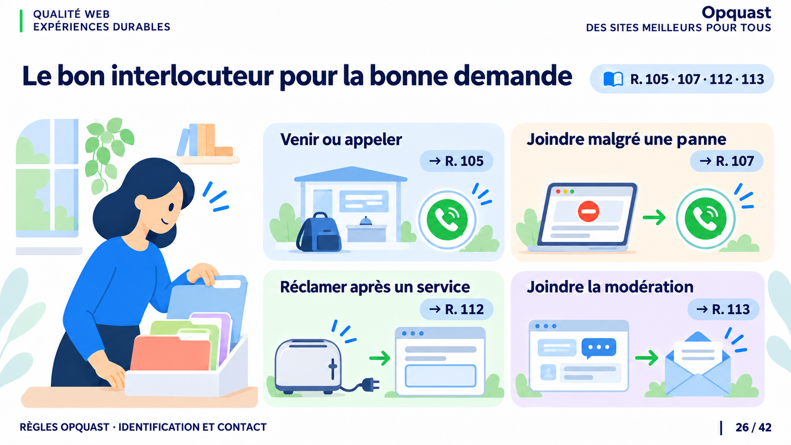
La visiteuse classe des dossiers colorés dans un bac. À droite, quatre panneaux associent les demandes aux règles. Le premier montre un comptoir et un téléphone ; le deuxième, un écran en arrêt puis un téléphone ; le troisième, un grille-pain puis un formulaire ; le quatrième, des échanges de forum puis une enveloppe. Les flèches et les libellés indiquent le passage de chaque situation au contact proposé.
Textes affichés dans l’image
- QUALITÉ WEB
- EXPÉRIENCES DURABLES
- Opquast
- DES SITES MEILLEURS POUR TOUS
- Le bon interlocuteur pour la bonne demande
- R. 105 · 107 · 112 · 113
- Venir ou appeler
- → R. 105
- Joindre malgré une panne
- → R. 107
- Réclamer après un service
- → R. 112
- Joindre la modération
- → R. 113
- RÈGLES OPQUAST · IDENTIFICATION ET CONTACT
- 26 / 42
Règles Opquast de la slide
Partir du besoin de contact
- Venir ou appeler suppose une adresse complète et un téléphone disponibles depuis toutes les pages.
- Disposer d’une autre voie en cas de panne suppose au moins deux moyens de contact fonctionnels.
- Réclamer après un service suppose un contact identifié pour le support chargé des réclamations.
- Joindre la modération suppose un moyen de lui adresser une question ou une demande.
Des fonctions distinctes
- Un même formulaire peut servir plusieurs besoins si chacun est identifiable.
- Un bouton de signalement ne prouve pas à lui seul la possibilité de joindre le modérateur.
- Ces quatre cartes sont un regroupement pédagogique, pas une nomenclature officielle.
Mémo oral
- Partir du besoin, trouver l’interlocuteur.
Transition
- Dans les situations suivantes, c’est l’impasse rencontrée qui indique le besoin manquant.
Slide 27 - Checkpoint 3 : quatre impasses de contact
Un jeune homme en sweat gris et sac à dos réfléchit devant sa tablette. Quatre panneaux épinglés A à D alignent les énoncés et leurs vues : un formulaire, une page avec un téléphone, un forum avec le bouton Signaler et des fenêtres superposées dont celle des Archives. Deux écrans, une tasse et des livres sont posés sur un bureau sous les panneaux. La question commune figure au-dessus.
Textes affichés dans l’image
- QUALITÉ WEB
- EXPÉRIENCES DURABLES
- Opquast
- DES SITES MEILLEURS POUR TOUS
- Checkpoint 3 : quatre impasses de contact
- Quelle règle n’est pas respectée ?
- A. Le seul contact est un formulaire.
- B. Un numéro surtaxé, sans horaires ni tarif.
- C. Un forum avec un bouton « Signaler », mais aucun moyen de joindre la modération.
- Signaler
- D. Adresse et téléphone enfouis dans une page Archives, sans lien depuis les autres pages.
- Archives
- RÈGLES OPQUAST · IDENTIFICATION ET CONTACT
- 27 / 42
Règles Opquast de la slide
Reconnaître le blocage
- Le contact existe parfois en apparence sans permettre d’atteindre le bon interlocuteur.
- Le bon diagnostic part du besoin qui reste sans réponse.
Les quatre réponses
- En A, il manque un second moyen de contact.
- En B, il manque les horaires et les tarifs du service.
- En C, le bouton de signalement ne fournit pas un moyen de joindre la modération.
- En D, l’adresse et le téléphone existent, mais ne sont pas directement disponibles depuis toutes les pages.
Mémo oral
- Chaque impasse a sa règle.
Transition
- Après le contact, une autre difficulté commence : savoir combien de temps attendre.
Slide 28 - Combien de temps attendre une réponse ?
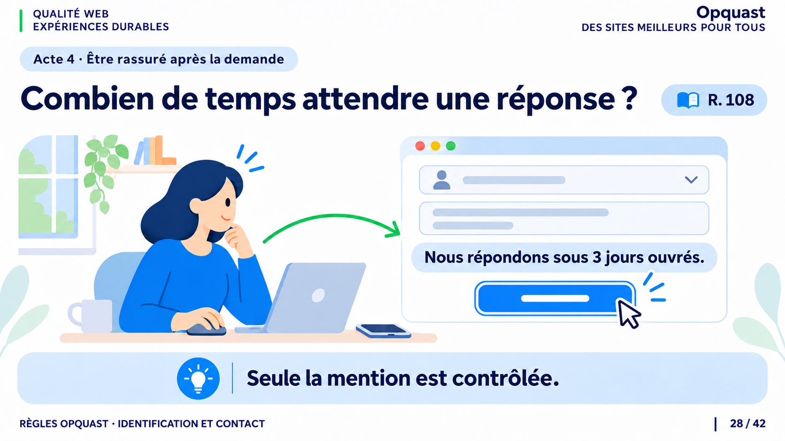
La visiteuse utilise la souris, une main au menton, devant son ordinateur. Une flèche verte mène à un formulaire agrandi : deux zones de saisie précèdent la mention Nous répondons sous 3 jours ouvrés. Un pointeur désigne le bouton bleu situé dessous. Un téléphone est posé sur la table. Le bandeau inférieur, accompagné d’une ampoule, précise que seule la mention est contrôlée.
Textes affichés dans l’image
- QUALITÉ WEB
- EXPÉRIENCES DURABLES
- Opquast
- DES SITES MEILLEURS POUR TOUS
- Combien de temps attendre une réponse ?
- Acte 4 · Être rassuré après la demande
- R. 108
- Nous répondons sous 3 jours ouvrés.
- Seule la mention est contrôlée.
- RÈGLES OPQUAST · IDENTIFICATION ET CONTACT
- 28 / 42
Règles Opquast de la slide
Donner un repère d’attente
- Annoncer un délai permet à la personne de savoir à partir de quand s’étonner de ne pas avoir de réponse.
- Les trois jours ouvrés sont une valeur illustrative, pas un délai imposé par Opquast.
Impact du non-respect
- Sans repère, l’utilisateur s’inquiète, relance ou abandonne alors que sa demande suit son cours.
Ce que garantit la règle
- Elle vise l’information sur un délai chiffré pour chaque formulaire de contact.
- Le contrôle vérifie la présence de cette indication, sans valider sa valeur ni son respect effectif.
- L’expert admet « les plus brefs délais » lorsqu’aucun délai ne peut être garanti, mais cette formule seule ne satisfait pas le contrôle chiffré.
Mémo oral
- Un délai chiffré, avant l’envoi.
Transition
- Un délai annoncé ne confirme pas que la demande est arrivée.
Slide 29 - Ma demande est-elle bien arrivée ?
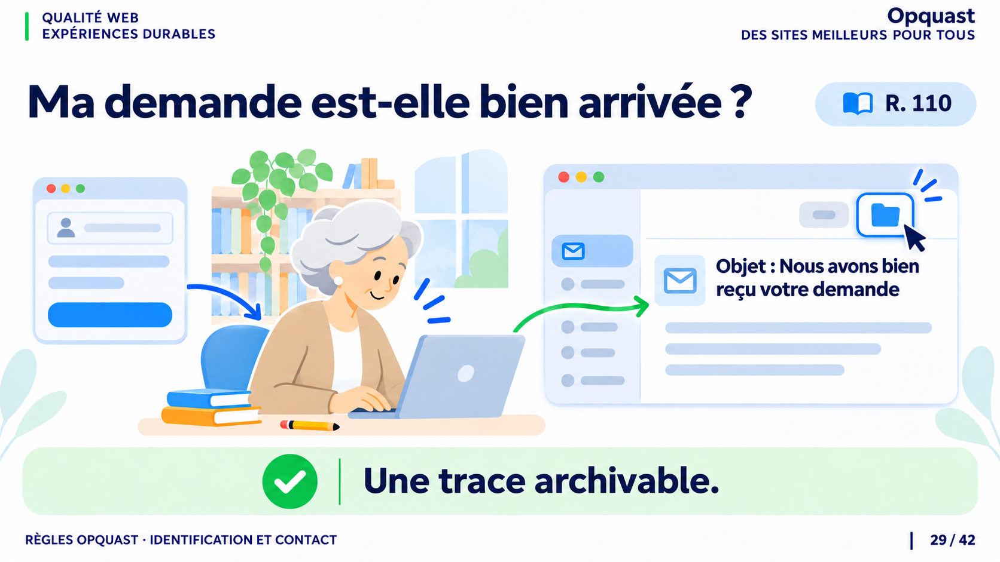
Une femme aux cheveux blancs consulte son ordinateur. À gauche, un formulaire est relié à sa scène par une flèche bleue ; à droite, une flèche verte mène à une messagerie agrandie. L’objet du message annonce la réception de la demande. Un pointeur désigne un bouton en forme de dossier dans le coin supérieur droit. Le bandeau inférieur coché porte la phrase Une trace archivable.
Textes affichés dans l’image
- QUALITÉ WEB
- EXPÉRIENCES DURABLES
- Opquast
- DES SITES MEILLEURS POUR TOUS
- Ma demande est-elle bien arrivée ?
- R. 110
- Objet : Nous avons bien reçu votre demande
- Une trace archivable.
- RÈGLES OPQUAST · IDENTIFICATION ET CONTACT
- 29 / 42
Règles Opquast de la slide
Lever le doute après l’envoi
- Une fois le formulaire envoyé, la personne ne sait pas toujours si sa demande est réellement arrivée.
- Un accusé par e-mail apporte une confirmation qu’elle peut conserver.
Impact du non-respect
- L’incertitude peut conduire à recommencer l’envoi et à douter du fonctionnement du service.
Ce que garantit la règle
- Elle vise une confirmation archivable de la réception, distincte du traitement de la demande.
- Le contrôle consiste à envoyer une demande fictive avec une adresse e-mail réelle puis à vérifier que l’accusé est reçu.
- Le message de réussite à l’écran ne remplace pas cette confirmation ; la solution du livre suppose de recueillir obligatoirement une adresse e-mail dans le formulaire.
Mémo oral
- Reçu, et je peux le prouver.
Transition
- Cet e-mail doit aussi permettre de reprendre contact.
Slide 30 - Un e-mail « Ne pas répondre » ne doit pas être une impasse
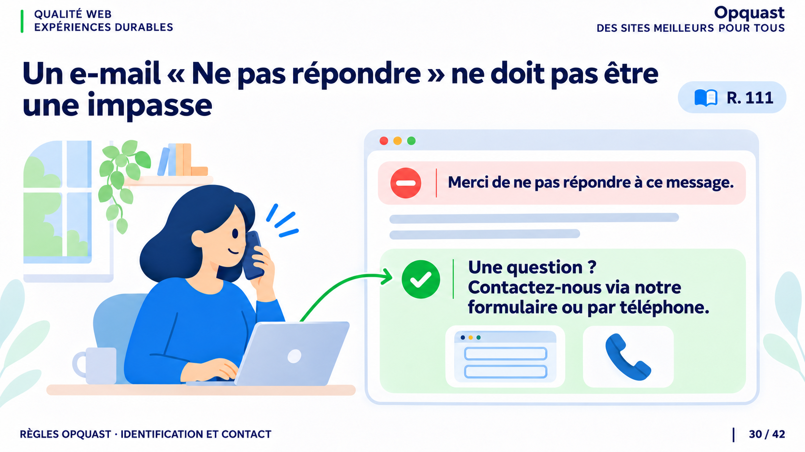
La visiteuse téléphone devant son ordinateur. Une flèche verte mène à la partie basse d’un e-mail agrandi. En haut du message, un bandeau rouge demande de ne pas répondre. En dessous, un encadré vert coché propose le formulaire ou le téléphone, illustrés par une petite fenêtre de saisie et un combiné bleu.
Textes affichés dans l’image
- QUALITÉ WEB
- EXPÉRIENCES DURABLES
- Opquast
- DES SITES MEILLEURS POUR TOUS
- Un e-mail « Ne pas répondre » ne doit pas être une impasse
- R. 111
- Merci de ne pas répondre à ce message.
- Une question ? Contactez-nous via notre formulaire ou par téléphone.
- RÈGLES OPQUAST · IDENTIFICATION ET CONTACT
- 30 / 42
Règles Opquast de la slide
Laisser une possibilité de réagir
- Un service peut envoyer un e-mail depuis une adresse qui ne lit pas les réponses.
- La personne peut pourtant avoir une question après l’avoir reçu.
Impact du non-respect
- Sans moyen de contact dans le message, elle doit chercher seule comment joindre l’expéditeur.
Ce que garantit la règle
- Elle vise à permettre de répondre ou de prendre contact depuis le contexte du mail.
- On vérifie au moins un moyen de contact dans chaque type de mail envoyé, y compris en no-reply.
- Le no-reply n’est pas interdit par cette règle ; c’est l’absence de tout moyen de contact qui crée l’impasse.
Mémo oral
- Pas de réponse possible, un contact quand même.
Transition
- Délai, réussite, accusé et contact répondent ainsi à des moments différents.
Slide 31 - Avant, pendant, après : quatre messages différents
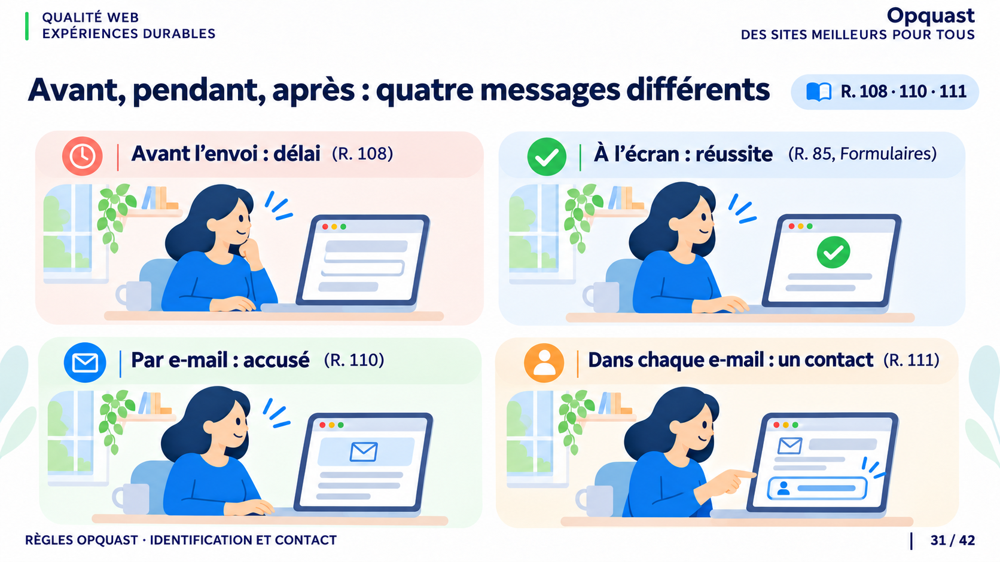
Quatre panneaux montrent la visiteuse devant son ordinateur aux moments nommés par leurs en-têtes. Avant l’envoi, elle réfléchit devant le formulaire. À l’écran, une coche verte indique la réussite. Par e-mail, une enveloppe occupe la page du message. Dans le dernier panneau, elle pointe une zone de contact avec un avatar au bas de l’e-mail. Chaque en-tête associe son pictogramme au numéro de règle concerné.
Textes affichés dans l’image
- QUALITÉ WEB
- EXPÉRIENCES DURABLES
- Opquast
- DES SITES MEILLEURS POUR TOUS
- Avant, pendant, après : quatre messages différents
- R. 108 · 110 · 111
- Avant l’envoi : délai
- (R. 108)
- À l’écran : réussite
- (R. 85, Formulaires)
- Par e-mail : accusé
- (R. 110)
- Dans chaque e-mail : un contact
- (R. 111)
- RÈGLES OPQUAST · IDENTIFICATION ET CONTACT
- 31 / 42
Règles Opquast de la slide
Chaque moment a son information
- Avant l’envoi, le délai annonce combien de temps attendre.
- Après la soumission, le message à l’écran indique la réussite de l’action.
- L’accusé reçu par e-mail confirme l’arrivée et fournit une trace archivable.
- Chaque e-mail garde un moyen de joindre le service.
Ne pas remplacer une preuve par une autre
- Une réussite affichée n’est pas un accusé de réception reçu.
- Le message de soumission appartient à la rubrique Formulaires, distincte de l’identification et du contact.
- Cette frise est une mise en relation pédagogique, pas un regroupement officiel.
Mémo oral
- Annoncer, confirmer, accuser, rester joignable.
Transition
- Une attente déçue permet de repérer lequel de ces messages manque.
Slide 32 - Checkpoint 4 : trois attentes déçues
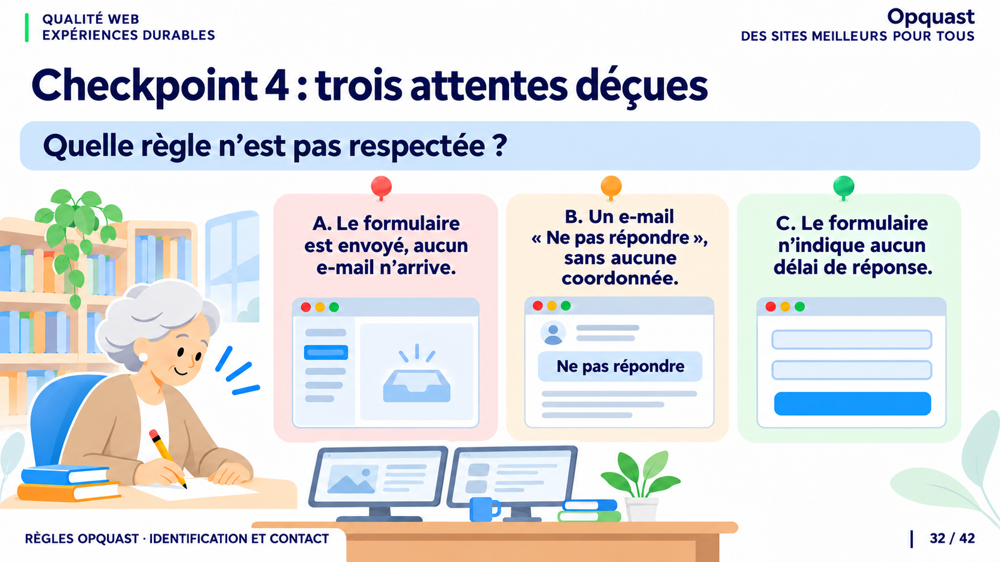
Une femme aux cheveux blancs prend des notes. Trois panneaux épinglés A, B et C présentent les énoncés : ils montrent une messagerie avec un bac vide, un e-mail portant Ne pas répondre et un formulaire à deux champs avec son bouton bleu. Deux écrans sont posés sur le bureau sous les panneaux. La question commune est inscrite dans le bandeau bleu supérieur.
Textes affichés dans l’image
- QUALITÉ WEB
- EXPÉRIENCES DURABLES
- Opquast
- DES SITES MEILLEURS POUR TOUS
- Checkpoint 4 : trois attentes déçues
- Quelle règle n’est pas respectée ?
- A. Le formulaire est envoyé, aucun e-mail n’arrive.
- B. Un e-mail « Ne pas répondre », sans aucune coordonnée.
- Ne pas répondre
- C. Le formulaire n’indique aucun délai de réponse.
- RÈGLES OPQUAST · IDENTIFICATION ET CONTACT
- 32 / 42
Règles Opquast de la slide
Le moment laissé sans réponse
- Une personne qui attend peut douter de l’arrivée de sa demande ou du temps nécessaire pour répondre.
- Ces doutes demandent des informations différentes.
Les trois réponses
- En A, il manque l’accusé de réception archivable.
- En B, il manque un moyen de contact dans l’e-mail, même si son expéditeur n’accepte pas les réponses.
- En C, il manque l’indication chiffrée du délai de réponse.
- La valeur du délai et son respect effectif ne sont pas l’objet de ce dernier contrôle.
Mémo oral
- Chaque attente a son message.
Transition
- Ces besoins rencontrent aussi des règles d’autres rubriques.
Slide 33 - Identification et contact mobilise d’autres rubriques
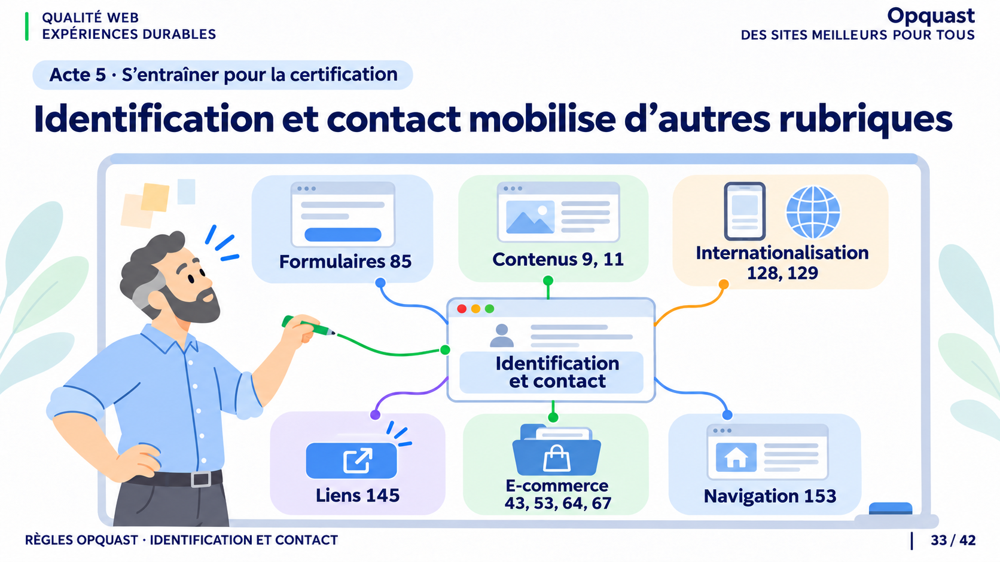
Un homme barbu trace au feutre vert devant un tableau. Au centre, une fenêtre porte Identification et contact. Six panneaux autour sont reliés à ce centre : formulaire, page de contenu, téléphone et globe, lien sortant, dossier avec un sac d’achat, puis page d’accueil. Leurs libellés donnent les six rubriques et les numéros de règles associés.
Textes affichés dans l’image
- QUALITÉ WEB
- EXPÉRIENCES DURABLES
- Opquast
- DES SITES MEILLEURS POUR TOUS
- Identification et contact mobilise d’autres rubriques
- Acte 5 · S’entraîner pour la certification
- Identification et contact
- Formulaires 85
- Contenus 9, 11
- Internationalisation 128, 129
- Liens 145
- E-commerce 43, 53, 64, 67
- Navigation 153
- RÈGLES OPQUAST · IDENTIFICATION ET CONTACT
- 33 / 42
Règles Opquast de la slide
Le contact traverse le référentiel
- Un téléphone doit aussi pouvoir être composé depuis l’étranger et être utilisable comme lien.
- Une adresse postale précise le pays ; un espace public décrit ses conditions de modération et propose un signalement des abus.
- Le commerce en ligne distingue le fonctionnement du SAV, la procédure de réclamation, son accusé de réception et le lien vers la source d’un label.
Relier sans confondre
- Le message de réussite après soumission relève des formulaires et ne remplace pas l’accusé reçu.
- Sans public spécifique visé, l’accès aux contenus ne doit pas être freiné inutilement.
- Cette carte rapproche des règles par leur usage ; elle n’invente aucune nouvelle rubrique officielle.
Mémo oral
- Le contact traverse le référentiel.
Transition
- Pour chaque objet, la preuve se cherche dans un endroit adapté.
Slide 34 - Où vérifier ? Six lieux de contrôle
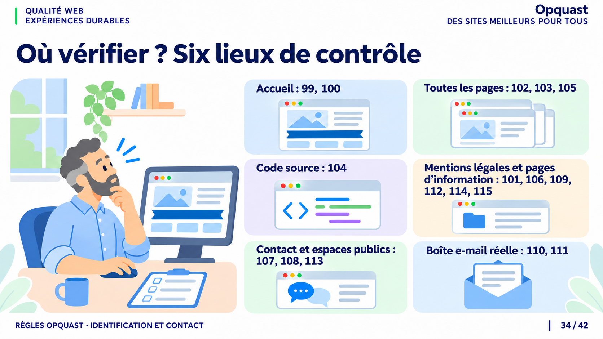
Un homme barbu réfléchit devant son écran, à côté d’une fiche à cocher et d’une tasse. À droite, six panneaux en deux colonnes montrent les lieux de contrôle : une page d’accueil, des pages superposées, du code, un dossier dans une page, des bulles d’échange et une enveloppe ouverte. Chaque panneau porte son libellé et la liste des règles à y examiner.
Textes affichés dans l’image
- QUALITÉ WEB
- EXPÉRIENCES DURABLES
- Opquast
- DES SITES MEILLEURS POUR TOUS
- Où vérifier ? Six lieux de contrôle
- Accueil : 99, 100
- Toutes les pages : 102, 103, 105
- Code source : 104
- Mentions légales et pages d’information : 101, 106, 109, 112, 114, 115
- Contact et espaces publics : 107, 108, 113
- Boîte e-mail réelle : 110, 111
- RÈGLES OPQUAST · IDENTIFICATION ET CONTACT
- 34 / 42
Choisir le bon lieu de preuve
- Un accueil permet de vérifier l’offre et l’avertissement de public ; les titres et l’accès aux coordonnées se vérifient sur les pages.
- L’appel d’icône exige le code source, tandis que les informations d’identité se trouvent souvent dans les mentions ou pages d’information.
- Pour l’accusé de réception, une demande fictive doit produire un e-mail réellement reçu ; les types d’e-mails doivent aussi être examinés pour leur contact.
Une carte avec des recouvrements
- Les identités peuvent aussi apparaître dans le pied de page ; la modération se cherche d’abord dans chaque espace public, puis à défaut dans une page générique.
- Le lien vers un référentiel déclaré se vérifie partout où il est annoncé.
- Ces six lieux sont un regroupement pédagogique, pas une catégorie officielle ni des périmètres exclusifs.
Mémo oral
- Chaque règle a son lieu de contrôle.
Transition
- Même au bon endroit, il reste à distinguer les objets voisins.
Slide 35 - Les huit confusions qui coûtent des points
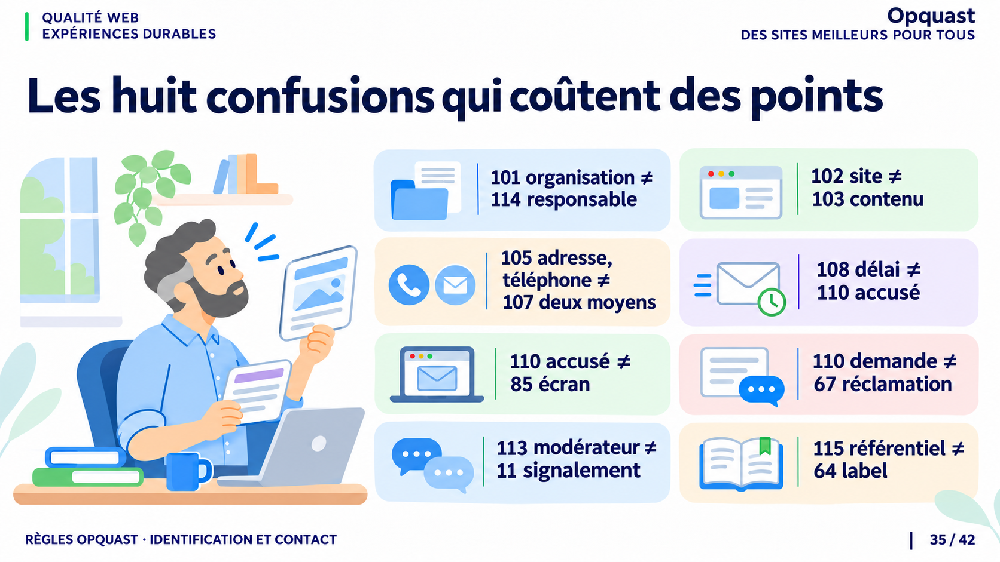
Un homme barbu tient deux fiches, l’une bleue et l’autre violette, devant son ordinateur. Huit encadrés en deux colonnes opposent les notions avec le signe ≠. Leurs pictogrammes montrent un dossier, une page, un téléphone et une enveloppe, une enveloppe avec horloge, un ordinateur avec message, un document avec bulle, deux bulles et un livre ouvert. Les numéros accompagnent chaque comparaison.
Textes affichés dans l’image
- QUALITÉ WEB
- EXPÉRIENCES DURABLES
- Opquast
- DES SITES MEILLEURS POUR TOUS
- Les huit confusions qui coûtent des points
- 101 organisation ≠ 114 responsable
- 102 site ≠ 103 contenu
- 105 adresse, téléphone ≠ 107 deux moyens
- 108 délai ≠ 110 accusé
- 110 accusé ≠ 85 écran
- 110 demande ≠ 67 réclamation
- 113 modérateur ≠ 11 signalement
- 115 référentiel ≠ 64 label
- RÈGLES OPQUAST · IDENTIFICATION ET CONTACT
- 35 / 42
Identité, titre et contact
- L’organisation qui propose le site et le responsable des contenus ne répondent pas à la même question.
- Le titre doit identifier le site et le contenu : ces deux informations se vérifient séparément.
- L’accès à l’adresse et au téléphone depuis toutes les pages ne se confond pas avec la présence de deux moyens de contact fonctionnels.
Attente et réception
- Le délai annonce une attente ; l’accusé confirme une réception.
- L’accusé archivable ne se confond pas avec le message à l’écran après soumission.
- L’accusé d’une demande d’information et celui d’une réclamation portent sur deux objets différents.
Interlocuteur et référence
- Joindre le modérateur ne se réduit pas à signaler un abus.
- Un référentiel déclaré et un label affiché demandent chacun un lien, selon deux règles distinctes.
- Ces huit paires forment un mémo pédagogique, pas une liste officielle de confusions.
Mémo oral
- Une paire, une différence.
Transition
- Les questions finales permettent de retrouver ces distinctions à partir de situations.
Slide 36 - Évaluation finale 1/2 : questions 1 à 4
La visiteuse écrit dans un carnet à spirale, une main près du menton. Quatre panneaux Q1 à Q4, en deux colonnes, présentent les questions. Ils illustrent un achat et un casque de support, une page avec une grande image, un bâtiment et un groupe de personnes, puis une recherche avec deux résultats. Chaque scène accompagne son énoncé.
Textes affichés dans l’image
- QUALITÉ WEB
- EXPÉRIENCES DURABLES
- Opquast
- DES SITES MEILLEURS POUR TOUS
- Évaluation finale 1/2 : questions 1 à 4
- Q1. Après un achat, aucun contact du support. Quelle règle ?
- Q2. Aucune page ne nomme l’organisation. Quelle règle ?
- Q3. Organisation nommée, aucun responsable des contenus. Quelle règle ?
- Q4. « Résultats 11 à 20 pour “vélo” – Les Ateliers du Pont » : la règle sur le contenu est-elle respectée ?
- RÈGLES OPQUAST · IDENTIFICATION ET CONTACT
- 36 / 42
Règles Opquast de la slide
Justifier plutôt que reconnaître un mot
- Le diagnostic part de ce qui manque à la personne dans chaque situation.
- Ces quatre questions sont des exercices originaux, sans statut de questions officielles.
Les quatre réponses
- Pour la première question, il manque le moyen de contacter le support ou le SAV, ici pour une éventuelle réclamation.
- Pour la deuxième, il manque l’identité de l’organisation qui propose le service.
- Pour la troisième, l’organisation est nommée mais le responsable des contenus ne l’est pas.
- Pour la quatrième, oui : l’intervalle de résultats et le terme recherché identifient le contenu, et le titre nomme aussi le site.
Mémo oral
- Répondre d’abord, vérifier ensuite.
Transition
- Les autres situations demandent de dépasser ce qui paraît correct au premier regard.
Slide 37 - Évaluation finale 2/2 : questions 5 à 8
Un homme barbu écrit dans un carnet, une main au menton. Quatre panneaux épinglés Q5 à Q8 montrent les cas : un onglet avec une petite icône et un extrait de head, un formulaire et un profil de réseau social, un formulaire et un e-mail, puis une fenêtre portant Message envoyé. Deux traits verts verticaux séparent les vues des premier et troisième panneaux.
Textes affichés dans l’image
- QUALITÉ WEB
- EXPÉRIENCES DURABLES
- Opquast
- DES SITES MEILLEURS POUR TOUS
- Évaluation finale 2/2 : questions 5 à 8
- Q5. L’icône s’affiche, mais aucun link rel="icon" dans le <head>. Règle respectée ?
- <head>
- </head>
- Q6. Formulaire et compte sur un réseau social, actifs : deux moyens ?
- Q7. « Réponse sous 48 h », puis « Nous avons bien reçu votre demande » : quelles règles ?
- Q8. « Message envoyé » à l’écran, aucun e-mail : accusé de réception respecté ?
- Message envoyé
- RÈGLES OPQUAST · IDENTIFICATION ET CONTACT
- 37 / 42
Règles Opquast de la slide
Chercher ce qui est réellement démontré
- Une icône visible ne prouve pas l’appel dans le code et une réussite à l’écran ne prouve pas la réception d’un e-mail.
- La présence d’une information doit être rattachée à son objet précis.
Les quatre réponses
- Pour l’icône, non : il faut un élément link présent dans le head avec une syntaxe valide ; le navigateur peut trouver un fichier par défaut.
- Pour le formulaire et le réseau social, oui, s’ils permettent tous deux de joindre effectivement l’organisation.
- Pour les deux messages, on reconnaît le délai de réponse chiffré, puis l’accusé de réception.
- Pour Message envoyé seul, non : la réussite affichée après soumission ne remplace pas l’accusé archivable reçu par e-mail.
Mémo oral
- Apparent n’est pas respecté.
Transition
- Le cas final rassemble ces besoins dans un même parcours.
Slide 38 - Grand cas final : une page Contact à auditer en cinq minutes
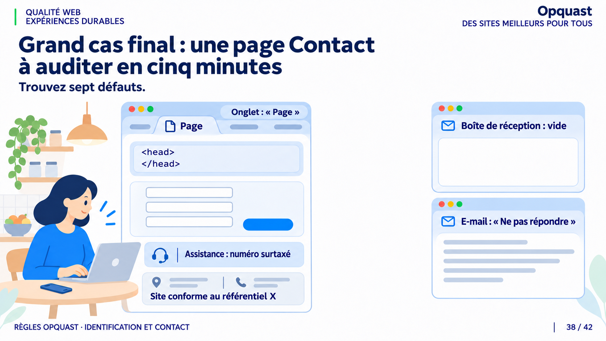
Dans une cuisine, la visiteuse consulte son ordinateur à une table ronde, près de son téléphone. La page agrandie au centre porte l’onglet Page, un bloc avec les balises <head> et </head>, trois champs et un bouton bleu, puis Assistance : numéro surtaxé. Son pied de page associe repère de localisation, combiné et déclaration de référentiel. À droite, deux fenêtres portent Boîte de réception : vide et E-mail : « Ne pas répondre ». La consigne demande de trouver sept défauts.
Textes affichés dans l’image
- QUALITÉ WEB
- EXPÉRIENCES DURABLES
- Opquast
- DES SITES MEILLEURS POUR TOUS
- Grand cas final : une page Contact à auditer en cinq minutes
- Trouvez sept défauts.
- Onglet : « Page »
- Page
- <head>
- </head>
- Assistance : numéro surtaxé
- Site conforme au référentiel X
- Boîte de réception : vide
- E-mail : « Ne pas répondre »
- RÈGLES OPQUAST · IDENTIFICATION ET CONTACT
- 38 / 42
Observer tout le parcours
- La page de contact, l’onglet et les e-mails peuvent laisser chacun un besoin sans réponse.
- L’accumulation de défauts entretient le doute même si un formulaire est présent.
- Ce cas est un exercice pédagogique, sans conclusion de conformité globale.
Les défauts d’identification et d’information
- Le titre Page ne nomme ni le site ni le contenu : un seul repère touche deux règles.
- Le head vide ne contient aucun appel valide d’icône.
- L’assistance ne donne ni horaires ni tarif.
- Le formulaire ne mentionne aucun délai chiffré.
- Le référentiel déclaré est sans lien.
Les défauts après l’envoi
- L’absence d’accusé reçu laisse la personne sans confirmation archivable.
- L’e-mail sans réponse directe ne fournit aucun moyen de contact.
Mémo oral
- Auditer le parcours entier.
Transition
- La correction doit rattacher chaque constat à son objet et préserver ce qui reste inconnu.
Slide 39 - Correction du grand cas : sept repères, huit règles
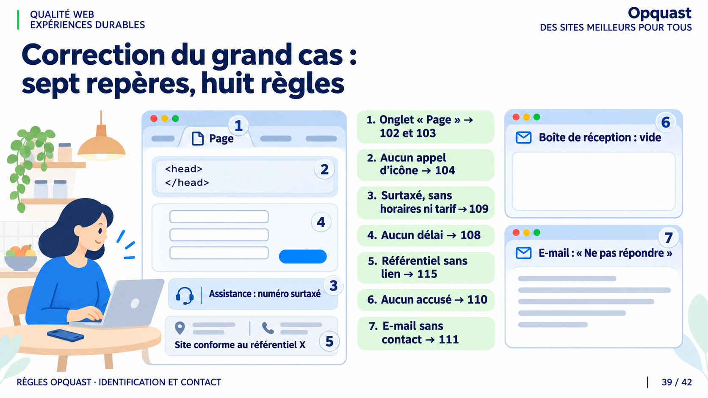
La visiteuse consulte son ordinateur dans la cuisine. La page Contact agrandie porte cinq repères ronds : 1 sur l’onglet Page, 2 dans le bloc head, 4 près du formulaire, 3 près de l’assistance et 5 près de la déclaration de référentiel. Les repères 6 et 7 sont posés sur les deux fenêtres de messagerie à droite. Entre la page et les messages, sept cartouches verts listent les constats et les règles associées.
Textes affichés dans l’image
- QUALITÉ WEB
- EXPÉRIENCES DURABLES
- Opquast
- DES SITES MEILLEURS POUR TOUS
- Correction du grand cas : sept repères, huit règles
- 1
- 1. Onglet « Page » → 102 et 103
- Page
- 2
- 2. Aucun appel d’icône → 104
- <head>
- </head>
- 3
- 3. Surtaxé, sans horaires ni tarif → 109
- Assistance : numéro surtaxé
- 4
- 4. Aucun délai → 108
- 5
- 5. Référentiel sans lien → 115
- Site conforme au référentiel X
- 6
- 6. Aucun accusé → 110
- Boîte de réception : vide
- 7
- 7. E-mail sans contact → 111
- E-mail : « Ne pas répondre »
- RÈGLES OPQUAST · IDENTIFICATION ET CONTACT
- 39 / 42
Règles Opquast de la slide
Sept constats, huit objets de règle
- Le titre Page laisse indéterminés le site et le contenu, ce qui explique les deux règles pour un seul repère.
- L’icône demande un appel dans le head ; l’assistance demande horaires et tarifs ; le formulaire demande un délai chiffré.
- La déclaration de référentiel demande un lien ; la réception demande un accusé archivable ; l’e-mail demande un moyen de contact.
Ce qui est présent et ce qui reste inconnu
- Le cas représente une adresse, un téléphone et un formulaire : il ne montre pas une absence totale de coordonnées ou de moyens de contact.
- Ces symboles ne suffisent pas à prouver le fonctionnement réel des canaux ni l’accès depuis toutes les pages d’un site.
- Les pages d’identification ne sont pas affichées : on ne conclut pas à l’absence de l’organisation, de l’immatriculation ou du responsable des contenus.
Mémo oral
- Corriger, rattacher, ne pas conclure sans voir.
Transition
- La révision peut se concentrer sur les différences qui guident ces rattachements.
Slide 40 - Le mémo des huit distinctions
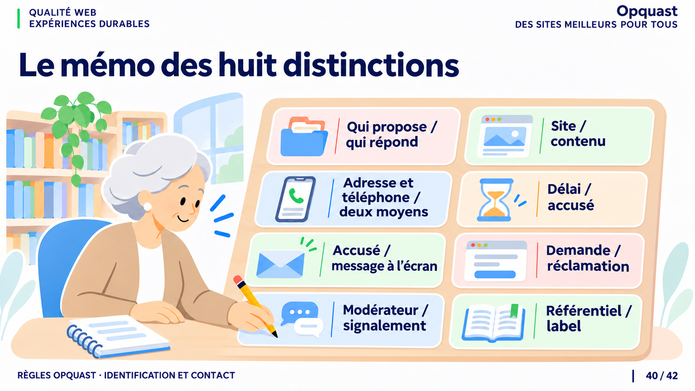
Une femme aux cheveux blancs pointe au crayon le bas d’un panneau posé sur la table, près d’un carnet. Huit cartes colorées, en deux colonnes, présentent les distinctions. Elles sont accompagnées d’un dossier, d’une page web, d’un téléphone, d’un sablier, d’une enveloppe, d’un formulaire, de bulles de discussion et d’un livre ouvert avec un marque-page.
Textes affichés dans l’image
- QUALITÉ WEB
- EXPÉRIENCES DURABLES
- Opquast
- DES SITES MEILLEURS POUR TOUS
- Le mémo des huit distinctions
- Qui propose / qui répond
- Site / contenu
- Adresse et téléphone / deux moyens
- Délai / accusé
- Accusé / message à l’écran
- Demande / réclamation
- Modérateur / signalement
- Référentiel / label
- RÈGLES OPQUAST · IDENTIFICATION ET CONTACT
- 40 / 42
Retenir la différence utile
- Le nom de l’organisation ne désigne pas toujours le responsable des contenus.
- Le nom du site ne décrit pas le contenu de la page ; des coordonnées accessibles ne couvrent pas tous les besoins de contact.
- Délai annoncé, réussite à l’écran et accusé archivable répondent à des moments distincts.
Revenir aux objets précis
- Une demande d’information et une réclamation ont chacune leur accusé.
- Joindre le modérateur ne se confond pas avec signaler un abus ; déclarer un référentiel ne se confond pas avec afficher un label.
- Ce mémo est pédagogique et ne remplace pas les intitulés et contrôles officiels.
Mémo oral
- Revoir demain, puis dans une semaine.
Transition
- Ces distinctions reviennent aux deux questions de départ.
Slide 41 - Dernière question : qui parle, et comment le joindre ?
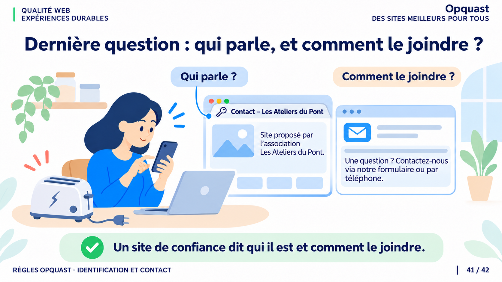
La visiteuse sourit en utilisant son téléphone devant son ordinateur, près du grille-pain débranché. Deux fenêtres sont agrandies à droite : la première porte un onglet Contact associé au nom du site et une phrase nommant l’association ; la seconde propose le formulaire ou le téléphone dans un e-mail. Au-dessus, les cartouches Qui parle ? et Comment le joindre ? reprennent les deux questions. Le bandeau vert inférieur coché porte la phrase de conclusion.
Textes affichés dans l’image
- QUALITÉ WEB
- EXPÉRIENCES DURABLES
- Opquast
- DES SITES MEILLEURS POUR TOUS
- Dernière question : qui parle, et comment le joindre ?
- Qui parle ?
- Comment le joindre ?
- Contact – Les Ateliers du Pont
- Site proposé par l’association Les Ateliers du Pont.
- Une question ? Contactez-nous via notre formulaire ou par téléphone.
- Un site de confiance dit qui il est et comment le joindre.
- RÈGLES OPQUAST · IDENTIFICATION ET CONTACT
- 41 / 42
Retrouver les repères du départ
- Le site fictif a maintenant un nom dans l’onglet, une icône et une organisation identifiée.
- L’e-mail indique comment reprendre contact au lieu de laisser la personne sans issue.
Une confiance construite par plusieurs règles
- Les règles d’identification et de contact contribuent à rendre le service reconnaissable et joignable.
- Ces repères ne constituent ni une preuve de qualité globale du service ni une validation de tout le site.
- Les deux questions orientent la lecture, mais chaque règle garde son propre contrôle.
Mémo oral
- Qui parle, comment le joindre.
Transition
- Pour approfondir et réviser précisément, les sources restent le point d’appui.
Slide 42 - Pour aller plus loin
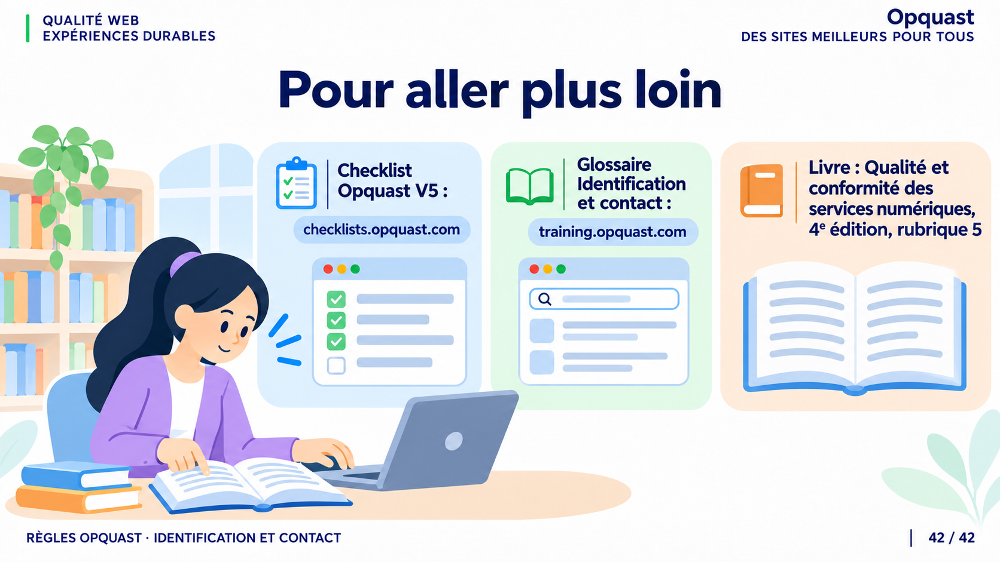
Une femme en veste violette suit du doigt une ligne d’un livre ouvert, une main près de son ordinateur. Trois panneaux présentent les ressources : une checklist avec trois cases cochées sur checklists.opquast.com, une recherche dans le glossaire sur training.opquast.com et un livre ouvert sous la référence à la quatrième édition, rubrique 5. Des livres sont empilés sur la table et rangés derrière elle.
Textes affichés dans l’image
- QUALITÉ WEB
- EXPÉRIENCES DURABLES
- Opquast
- DES SITES MEILLEURS POUR TOUS
- Pour aller plus loin
- Checklist Opquast V5 :
- checklists.opquast.com
- Glossaire Identification et contact :
- training.opquast.com
- Livre : Qualité et conformité des services numériques, 4ᵉ édition, rubrique 5
- RÈGLES OPQUAST · IDENTIFICATION ET CONTACT
- 42 / 42
Revenir aux sources
- La checklist officielle Opquast V5 fournit les libellés et les fiches des règles.
- Le glossaire Identification et contact, sur le site de formation Opquast, précise le vocabulaire.
- Le livre Qualité et conformité des services numériques, quatrième édition, développe la rubrique Identification et contact.
Garder la portée du support
- Les distinctions et les exercices de cette formation sont des outils pédagogiques, pas des questions officielles.
- Pour un doute de contrôle, il faut revenir à la fiche et à la source de référence, sans déduire une conformité du seul support.
Mémo oral
- Revenir aux sources.
Conclusion
- Les deux questions à garder sont : qui parle, et comment le joindre ?